生成时间：2026-11-11T15:03:20+08:00
今日保留论文数：15
内容构成：今日新文 15 篇；补充推荐 0 篇；经典旧文精读 0 篇
阅读分层：重点精读 3 篇；相关简报 12 篇。精读依据科学贡献筛选，简报保留方法、结论及局限。
数据源警告
- 本次有 3 个数据源访问异常；完整错误已保留在运行日志中，日报只显示摘要。
- 其他来源：3 个异常。
- 主要错误类型：其他 3 次。
高能天体物理重点
1. New Constraints on the Ultrahigh Energy Neutrino Flux from the First Array-Wide Search with the Askaryan Radio Array
- 来源：arXiv / astro-ph.HE
- 链接：https://arxiv.org/abs/2611.14350
- 作者：ARA Collaboration, N. Alden, S. Ali, P. Allison, D.Z. Besson, A. Bishop, P. Chen, Y.C. Chen
- 公告 / 来源日期：2026-11-11
- 阅读层级：重点精读
- 评分：novelty 9/10，importance 9/10，relevance 10/10，final 10.00/10
- 推荐理由：南极ARA首次五台联合10.6年级数据搜寻，零事件给50–1000 EeV最严的模型相关通量边界；关联独立方法论文。
中文题目：南极 ARA 五站联合搜寻收紧 50–1000 EeV 弥散中微子通量上限
做了什么：超高能宇宙线经过磁场会偏转，也会在传播中损失能量。由它们与物质或光子作用产生的中微子能提供来源线索，但预期通量极低。ARA 将南极冰内五站和第五站的相控阵用于同一个弥散搜寻。团队按照探测器状态模拟有效曝光，用随机抽出的 10% 数据建立背景和筛选条件，再解盲完整数据。
初始条件下只有一个相控阵事例通过。与同址第五站的波形、时刻和近场重建对照后，作者将其归为本地探测器放电并加了事后剔除，最终得到零个候选。期望背景为 $0.13\pm0.01$（统计），系统误差为上偏 0.05、下偏 0.06 个事例。全味弥散通量的 90% 置信上限，在图 1 的实验比较中最强区间为 50–1000 EeV。KM3NeT 约 220 PeV 候选处在另一个能段，ARA 对相关通量模型开始有约束。
为什么重要：南极台站随年份增加，触发阈值和有效面积各异，单独统计再相加会重复计算同时被两个站触发的事例。本文将随时间变化的仪器响应、共同触发和背景一起纳入有效曝光，展示射电阵列可以在统一计数口径下给出上限，并对超 GZK 质子源模型提供与空气簇射组成测量互补的检验。
理论 / 观测 / 仪器方法价值：可以复用的做法是按阵列配置计算接受度，用训练子样本约束热噪声和地表事件的分布尾部，再全阵列共同优化阈值。对近场探测器放电的判别用到了同址两套接收器的同时波形和联合重建。报告稀有事例搜寻时，可用相同结构记录解盲前条件、解盲后的诊断，以及对应的有效曝光变化。
为什么应该关注：弥散、单源和瞬变通量需要不同的接受度投影。将 ARA 上限与光学切伦科夫观测比较时，应对齐味比、能段、谱形和统计区间；要检查特定超高能宇宙线起源模型，则需将它的中微子谱与能量依赖曝光积分。50 EeV 以上的灵敏度有机会检验高最大能量与强源演化对应的中微子产额。
展开详细解读：文章讲解、背景、理论、重点章节、图表与相关工作
文章详细讲解
冰中的相干脉冲。 中微子在冰中相互作用后生成相对论簇射，过量负电荷随簇射前沿传播，形成 Askaryan 射电脉冲。冰的传播条件使相距公里的仪器能够覆盖大体积。观测同时包含热噪声、地表活动和近场放电，候选须满足传播时差、波形形态、方向及时间筛选。
五站随时间演化。 2013 年 1 月至 2023 年 12 月数据初始约有 28 站年，质量切选后剩 25.9 站年，其中至少一站运行的阵列有效时间为 10.6 年。50 个阵列配置描述不同运行组合。标准 A5 与同址相控阵同时可用时取后者，模拟的跨站触发按并集统计。
从背景尾部确定阈值。 10% 数据用于切选设计。作者根据地表富集样本的高度角和热背景的线性判别得分，估计少量极端事例漏入信号区的概率。阵列共同优化 144 个热阈值和 6 个地表阈值，参考谱采用已有全局限值的谱形。地表切选损失最大，参考谱整体信号效率约 28%。
解盲与上限。 一个相控阵脉冲起初通过筛选，随后在同一时刻的 A5 数据发现近场放电特征。新增时间关联切选去掉 21.9 秒的相控阵活时间，最终计数为零。通量上限以全味弥散谱给出；表 1 的模型排除还取决于各自谱形、超高能质子成分和源演化。
关键结果是怎么做出来的
五站标准天线覆盖 150–850 MHz，布于冰内多串。A5 的相控阵采用紧邻天线干涉触发，可以接收更弱的信号。NuLeptonSim 负责中微子穿过介质及相互作用，AraSim 模拟射电信号传播、天线与触发。图 2 展示标准天线串与相控串的空间关系。
质量层去掉严重人为污染、校准和每段取数起始的阈值稳定期，并筛去探测器自发异常及定位模糊事例。接下来用校准脉冲方向、时空聚集、地表兼容性、热判别得分和时间孤立去除背景。校准脉冲的预计漏过很小，地表和热背景主导剩余计数。
图 3 在 A3 一个阵列配置中比较模拟中微子、地表样本与热样本的高度角和线性判别得分。主体彼此分开时，少量尾部仍可通过。核密度和指数模型给出尾部漏过，阈值优化同时检查模拟信号会丢多少。
相控阵的唯一初始通过事例信噪比约 12，重建高度约 $-35^\circ$。A5 同时有单串异常，联合重建方向与最早出现高功率的通道相符。作者事后排除距离 A5 探测器异常 0.1 秒内的相控阵事例。预设的 5.8 小时全阵列时间孤立条件在该批事例上没有造成剔除。
图 1 的最强实验比较区是 50–1000 EeV。各实验限值换为全味、每十倍能量宽的分箱，分箱内不同谱指数没有进一步校正。低能接受度对 Askaryan 发射模型最敏感，高能端对中微子核子截面最敏感，文中分别给出约 50% 和约 150% 的接受度系统变化量级。
Muzio 模型预期约 2.43 例，Feldman–Cousins 口径约在 90% 置信水平排除。KM3NeT 参考谱约期望 1.6 例，表 1 对应泊松计数检验约 0.8σ、FC 排除约 77%。正文另报 1.6σ 张力，未在表中使用相同统计口径；这里采用可复算的表格计数口径。
展开背景、理论、公式、模型和章节导读
背景知识
信使之间的互补。 到达地球的高能带电核会在磁场中改向，传播中还会与背景辐射相互作用。由源内或传播反应产生的中微子保留方向线索，可补充宇宙线能谱和组成对源种群的约束。
冰中射电探测。 粒子簇射卷入介质电子，造成正负粒子数不对称。波长足够长时，相关发射场相干叠加，接收器可测到很短的宽带电压脉冲。高能增加触发机会，地球吸收则会改动入射方向接受度。
阵列年与站年。 两个站同时取数一年，提供共同阵列的一年覆盖，也提供两站年的仪器运行。单个事件可能跨站触发，单个阵列配置中应先算触发和通过切选的事件并集。
稀有背景由尾部控制。 热噪声主体的波形与信号差异很大，少量偶然高相关的事例仍可通过。地表射频也可能经重建出现深冰方向。最终条件依赖这些极端事例的绝对漏过数。
基础理论 / 方法脉络
相控触发把各天线波形按预期传播时延对齐再合成，强化相干短脉冲。事后干涉重建搜索可能的发射点，检查哪个位置的传播时差最能解释通道相关。深度依赖的冰折射率使射线路径弯曲，地表诊断还须检查次优解。
中微子穿过地球时的存活率、在冰中生成簇射的概率和仪器触发各随能量改变。模拟先将这些过程合并成触发接受度，再用全阵列条件筛选估计响应减少多少。
热噪声用线性判别把多种波形量投到一轴，地表背景用重建角度及其他深冰兼容量。训练子样本给分布，最后的背景率来自尾部积分；不同噪声环境和阈值需按实际配置建模。
零候选的统计含义取决于给定模型会产生多少事件。谱通量乘上逐能量曝光，积分成预期计数。相同的零计数可以约束不同模型，前提是各模型的曝光折叠使用一致的味比与单位。
公式与推导
从到时差重建方向。 对应方法论文 §IV.2.2 的教学表达。$t_i$ 是假定发射点 $\boldsymbol x$ 到第 $i$ 个接收器的传播时间，$C_{ij}$ 是电压轨迹的无量纲归一化互相关。实际实现按极化和射线路径处理。
把各段响应加成曝光。 方法论文式 11，$T_a$ 是配置 $a$ 的活时间（秒），$\mathcal A_a(E)$ 是触发接受度（面积乘立体角），$\epsilon_a(E)$ 是全阵列切选效率。对跨站触发求事件并集。
按阈值积分背景。 合并方法论文式 6–8。$b_s$ 是台站 $s$ 的表面漏过数，$b_{sc}$ 是台站配置 $c$ 的热尾积分，$w_{sca}$ 是时间权重；$f_s$ 为另一切选后的通过率，$\Theta_s,\Sigma_{sa}$ 分别为高度角、热判别阈值。
从背景定出设计尾部。 方法论文式 9–10 使用一侧泊松分布。$n_\star$ 是累积分布所用的整数边界。$B=0.13$ 时 $n_\star=4$ 对应 $N>4$ 尾概率约 $2.78\times10^{-7}$，即至少 5 个计数。附文把边界写为发现阈值，需保留严格不等号。
把效率和漏过放到同一目标。 方法论文式 5，$f(E)$ 是在 $E_0=10^{18.5}$ eV 归一化的参考谱形，$\mathrm{FC}$ 为作者的 Feldman–Cousins 构造。优化对阈值组合求所需最小参考谱归一化。
把谱投影成计数。 对应主文讨论的教学表达。$\Phi(E)$ 是全味弥散微分通量，通常用 $\mathrm{GeV}^{-1}\mathrm{cm}^{-2}\mathrm{s}^{-1}\mathrm{sr}^{-1}$，积分使用一致的能量单位；$\mu_{\rm s}$ 为期望信号计数。
由计数上限得到谱的上限。 下式为原文计数构造的教学换算。指定能段的形状取 $\Phi(E)=\Phi_0 f(E)$，零候选和背景 $B$ 给信号计数上限 $s_{90}$，相应归一化用加权曝光除回。
比较已给定的模型。 主文表 1 的 FC 排除水平 $\alpha$ 通过下式求得。这与直接的零计数泊松概率属于两个统计量。若 $\mu_{\rm s}=1.6$，前一泊松式给 $p\simeq0.20$，表中记为约 0.8σ。
模型拟合 / 应用方法
阵列仿真按实际活时间和触发组合进行，以 $E^{-1}$ 取样取得宽能区事件，再重加权到参考谱优化。触发接受度随阵列配置变化。对 A5 和同址相控阵并行的数据优先使用相控阵，并对其他跨站触发去重。
在 10% 训练样本上，热背景的指数尾拟合量化穿过热切线的极端概率，地表富集数据的重建角度用核密度估计。144 个热阈值和 6 个地表阈值在统一参考谱目标下优化，允许异构设备承担不同贡献。
期望地表漏过约 0.045 例、热噪声约 0.0865 例、未标记校准脉冲约 $4\times10^{-7}$ 例。统计误差源自训练尾部样本有限；系统误差由代表配置上重新分析获得。冰衰减、折射率、Askaryan 模型和中微子截面则另外改动信号接受度。
第一次解盲后同步 A5 波形和联合定位支持唯一事件的放电解释。作者报告新增切选与曝光损失，可用独立数据检验以后事先加入的近场条件。零事件的上限基于该最终条件。
宇宙线源模型和 KM3NeT 参考通量均折叠同一阵列曝光后与零计数比较。前者受源演化和组分影响，后者从单事件推断弥散谱。要检验瞬变或定向情景，应另外按观测时间、方向和能谱计算响应。
重点章节 / 结果段落怎么读
- 主文 Detector 与伴随论文 §II–III，查清标准站、相控阵、25.9 站年和 10.6 年的统计关系。
- 主文 Event Selection 与伴随论文 §IV–V，跟随波形重建、训练分样和图 3 的两类背景尾部。
- 伴随论文 §V.3 式 5–11 和 §VI，重构背景和曝光优化，区分统计误差和系统变化。
- 两篇 Results，核对唯一初始通过事例、同址 A5 的放电及新增 21.9 秒剔除。
- 主文图 1、表 1 和 Discussion，从有效曝光理解各模型约束及与 KM3NeT 的统计口径。
关键图表与解读
图 1
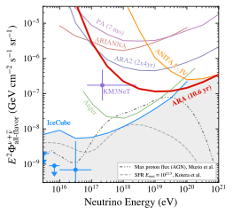
图注：全味弥散超高能中微子通量的 90% 置信上限（粗红线），与 IceCube、KM3NeT、Auger、ANITA I–IV、ARIANNA 及较早 ARA 结果对照。灰区边界为优化使用的全局上限，灰虚线为示例通量模型。各限值转成每十倍能量一箱的全味口径，箱内谱指数差别未进一步校正。
怎么看这张图：先沿横轴定位 50–1000 EeV，再对照粗红线与其他实验。灰色模型虚线有不同高能成分，KM3NeT 点在更低能量。 展示通量限制在哪些能量上超过既有实验。
来源与置信度：arXiv HTML；source verified；https://arxiv.org/html/2611.14350v1/5sa_e2Sensitivity_astrocosmo_AL.svg
图 3
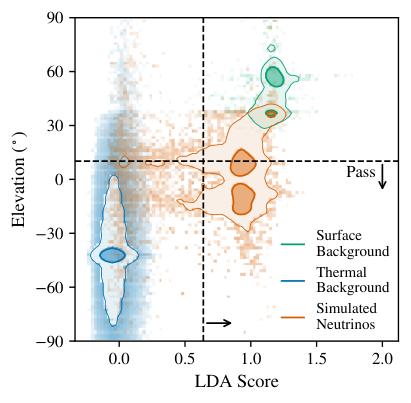
图注：A3 在阵列配置 3 下，模拟中微子（橙）、地表背景（绿）与热背景（蓝）在重建高度角和线性判别得分平面上的分布。实线包围 50% 或 90% 的等密度区域，黑虚线为阈值。地表尾部以高度角核密度估计，热尾以得分指数模型拟合。低信噪比的仪器相关伪影使热事件高度角有偏。
怎么看这张图：比较信号和两类背景的中心与尾部，黑虚线将较深重建和信号样得分共同限定为信号区。最末尾事件驱动两条切线。 连接事例分类、背景尾部和低漏过结果。
来源与置信度：arXiv HTML；source verified；https://arxiv.org/html/2611.14350v1/a3c2_lda_v_zenith.png
强相关工作
ARA 同次搜索方法论文展开阵列配置、三类背景、效率及唯一事例重建。主论文和方法篇使用同一批数据；早期 ARA 台站或相控阵搜索给了比较阈值与效率的基准。
IceCube 极高能搜寻通过光学切伦科夫响应约束超高能宇宙线质子份额。KM3NeT 候选给约 220 PeV 的单事件能量推断。ARA 提供射电技术与更高能接受度，组合数据要对照谱形、味比和曝光。
Muzio 等的源模型联立宇宙线和中微子信号，产生依赖质子组分与源演化的谱。ARA 排除的是表 1 检验的具体实现，其他参数组合需要重算期望计数。
同一事件 / 同类源线索：
相似工作：
基础理论 / 方法工作：
相反观点 / 张力线索：
（未提供）
2. Unidentified Sources in the 4FGL-DR4 Fermi-LAT Catalog as Potential Dark Matter Satellites
- 来源：arXiv / astro-ph.HE
- 链接：https://arxiv.org/abs/2611.13095
- 作者：Fernando Valenciano, Miguel A. Sánchez-Conde, Jorge Martin Camalich
- 公告 / 来源日期：2026-11-11
- 阅读层级：重点精读
- 评分：novelty 8/10，importance 8/10，relevance 10/10，final 9.70/10
- 推荐理由：将4FGL-DR4未关联源系统筛选与光子谱检验接到暗子晕截面约束，可核验假设和灵敏度依赖。
中文题目：银河系里有没有只发伽马射线的暗卫星？Fermi-LAT 未关联源的谱检验与湮灭截面上限
做了什么：Valenciano 等人从费米大面积望远镜（Fermi-LAT）第 4 版源表第 4 次发布（4FGL-DR4）的 2428 个未关联伽马源出发，寻找可能由弱相互作用大质量粒子（WIMP）湮灭照亮的银河暗卫星。暗卫星预期缺少恒星和气体，因此通常没有可见光等波段对应体。作者按银纬、变源指数、探测显著性与能谱形状筛查，留下 220 个形状与湮灭谱相容的源，再剔除有潜在多波段对应体的对象，留下 77 个。
他们用近 16 年 LAT 事件逐源重做似然拟合，同时让七种纯湮灭道和三类常用天体谱竞争。77 个源中只有两个达到试验因子校正前的名义“强偏好”，均未达到更严格的判据，最佳拟合质量也未呈现共同粒子模型应有的聚集。作者把仍未排除的候选数和模拟暗子晕的可探测数比较，给出截面上限。低于约 50 GeV 的热遗迹 $b\bar b$ 模型能否被排除，取决于 77 个候选今后都能被可靠排除的灵敏度情景。
为什么重要：有伽马射线而缺少对应体是一个可筛查的观测特征。脉冲星、活动星系核、星表关联不完备和银盘弥散模型误差均能产生混淆。本文把候选筛选、逐源谱检验和总体计数约束接起来，说明当前观测实际提供了多强的上限，也把继续辨认普通天体能改善多少定量化。这为有恒星动力学测量的矮球状星系分析提供了独立的目标种群。
理论 / 观测 / 仪器方法价值：可复用的环节是把探测阈值写成依赖质量、湮灭道和天区的 $F_{\min}$，再与模拟的第 $n$ 亮子晕 $J$ 因子连接。谱模型比较需要一致的事件选择、响应、弥散模板和邻源自由度。源的存在性由探测统计量描述，谱解释的相对偏好由修正 Akaike 信息准则给出，种群上限则另依赖模拟和样本选择。逐层保留输入能明确上限究竟受限于灵敏度还是源分类。
为什么应该关注：高能巡天与成像大气切伦科夫望远镜（IACT）跟进均会面对未关联源。先看源在允许的谱模板中是否偏好硬尾，再把各仪器的能段、视场和背景折进可探测性，能把跟进排序落实到可检验条件。近邻子晕的角延展、LAT 的点源选择、低银纬的弥散残差，以及射电或 X 射线的覆盖不均，都会改变联合样本能检验的范围。
展开详细解读：文章讲解、背景、理论、重点章节、图表与相关工作
文章详细讲解
科学问题。标准 ΛCDM 宇宙学预期银河系暗晕中有许多小子晕。若其中有自湮灭 WIMP，密度高的子晕即使没有恒星也可能在伽马射线源表中出现。可观测问题是，能否用未关联源的天空位置、时间稳定性、能谱及多波段资料从常见天体背景中识别出暗卫星种群。
作者怎么做。先在 14 年星表中去掉银纬绝对值不超过 $20^\circ$ 的源、显著变源和低于 $5\sigma$ 的探测。对余下 445 个源用峰值能量和曲率比较其与 CosmiXs 湮灭光子谱的相容性，再用低可信对应、射电、X 射线和邻域资料形成两级样本。对最干净的 77 个源用 2008 年 8 月至 2024 年 4 月的 LAT 事件做独立的空间和能谱分箱拟合。
关键结果。采用修正 Akaike 信息准则后，两个源的 $\Delta\mathrm{AIC}_c$ 小于或等于 $-5$，这一阈值是在扫描多个湮灭道之前解释的。所有源均未达到 $-10$，拟合质量和截面散点也没有形成一个共同粒子参数区域。对保留 220 或 77 个候选的情景，约 10 GeV 处截面上限的量级分别为 $2\times10^{-25}$ 和 $9\times10^{-26}\,\mathrm{cm^3\,s^{-1}}$。
局限和下一步。源级谱拟合使用单一纯湮灭道和点源处理，脉冲星等天体谱仍可与湮灭谱重叠。LAT 逐源分类和总体上限共享前面的样本剪裁。近邻子晕的延展、低银纬覆盖以及仅含两种弥散分量的模拟灵敏度会影响映射关系。可进一步检查最可疑两源的多波段对应、位置和角延展，并重新估计在各天区中通过整套筛选的概率。
关键结果是怎么做出来的
第一步是决定哪类源有可用的分类信息。银纬截去银盘中心带后 $2428\to858$，用 4FGL-DR4 变源指数 27.69 继续筛到 780，施加 $5\sigma$ 星表探测阈值后剩 445。位置裁剪减少银盘源和弥散混淆，也使结论适用于选过的高银纬样本。
第二步是把理论模板和目录数据投影到同一谱形空间。作者对合成湮灭谱拟合对数抛物线，在 $E_{\rm peak}$ 与 $\beta$ 平面给出可相容区域。220 个未关联源落在其中。图 3 中紫色区域与活动星系核和脉冲星的分布重叠，说明相容只是进入复核的条件。
第三步用独立波段减少候选污染。目录的 CLASS2 是低置信对应线索，再结合 VLASS 射电巡天、Chandra、eROSITA、Swift-XRT 等候选表与 SIMBAD 邻域记录，剩下 77 个源。目录的分辨率、深度和交叉匹配方式都决定了这个数，因而保留 220 源情景对照。
第四步是在同一 LAT 视场模型中优化背景、搜寻遗漏邻源并提取目标谱。逐源比较最佳纯湮灭道和最佳天体参数化。图 5 的大部分结果倾向天体谱，J2342.4−4739 与 J1225.9+2951 的负差值值得复核。亮标记按探测显著性缩放，不能据此估计暗物质解释的置信度。
最后比较剩余候选数和模拟数。作者以 Via Lactea II（VL-II）重填模拟中第 220、77 或 1 大 $J$ 因子的低分位数换算截面。样本越干净，能容许的可见暗卫星越少，所用的 $J$ 越大，截面线越低。图 8 的分位数和图 9 的阴影分别反映子晕种群波动与天空灵敏度变化。
展开背景、理论、公式、模型和章节导读
背景知识
层级结构形成让小暗晕被银河系的主晕吞并。一部分子晕在潮汐剥离后保留下来。低质量成员很难留住气体和形成恒星，可能比有光学恒星的矮球状卫星更暗。在只有引力的模拟中可以统计其数量和亮度排序，再考察重子及潮汐过程会如何改变结果。
自湮灭强度随暗物质密度平方变化。即使一个子晕总质量小，只要足够近或有较强的中心密度峰，视线积分就可能可观。矮球状星系可用恒星运动估计密度，对没有可见恒星的暗卫星则需要种群模拟给出亮度的分布。
Fermi-LAT 用长期全空扫描积累 GeV 光子，4FGL-DR4 共编入 7195 个伽马源。未关联源只是目录没有给出可信天体对应的源。许多普通天体可能暂时缺乏对等深度的多波段数据。高银纬的活动星系核和毫秒脉冲星尤其值得作为背景类考虑。
粒子湮灭谱一般有由质量和衰变道共同决定的宽峰与端点。脉冲星的弯曲谱也可具有类似峰形，活动星系核的变动则可能因统计有限而不显著。长期曝露和形状诊断提供区分能力，其强度需要结合邻源、弥散模型和试验因子评估。
基础理论 / 方法脉络
先分清粒子量和天体量。单位体积湮灭率由粒子数密度的平方和速度加权截面决定。每次湮灭的光子能谱由末态粒子及其衰变决定。把密度平方沿视线和天区积分，就能用相同粒子谱描述不同的子晕目标。
谱形降维把本来分布在许多能量道的计数投影到峰值能量和曲率。能量流峰随对数抛物线的局部斜率变化。把目录源和理论模板都拟合成同样的形式，才可以比较相容性。暗弱源的谱参数高度相关，落在某类轮廓内仅说明值得用原始事件复查。
原始 LAT 事件的计数似然包括模型源、银河弥散和各向同性成分，并受响应与曝光影响。先重拟合邻源有助于减少目标吸收邻源或弥散残差的风险。探测统计量衡量加入一个源的改善，谱型竞争还必须处理候选模型的自由参数数量。
总体约束建立在一个顺序统计量上。假如给定截面能照亮的暗子晕数比所有允许候选还多，该粒子模型在这套子晕种群假设下受到约束。阈值依赖谱形和天空背景，保守的第 5 百分位亮度用来避免仅凭某个异常明亮的模拟实现就给出过强的上限。
公式与推导
1. 从密度得到天体因子。 原文式（1）的积分部分把接收方向内的密度平方沿视线相加，常用单位为 $\mathrm{GeV^2\,cm^{-5}}$。这里 $\ell$ 为视线距离，$\Omega$ 为天空方向，$\Delta\Omega$ 为所积分的天区。紧致源的中心密度对结果有较大的权重。
2. 乘上每次湮灭的光子产额。 原文式（1）中 $m_\chi$ 是 WIMP 质量，$\langle\sigma v\rangle$ 是速度平均截面，$B_i$ 是第 $i$ 个末态的分支比。$1/(2m_\chi^2)$ 将质量密度换成粒子对的计数因子，$4\pi$ 给出各向同性辐射的几何归一化。
3. 令能量流谱取峰值。 原文式（2）–（3）。令 $x=\ln(E/E_0)$，能量流每个对数能量间隔正比于 $E^2\mathrm dN/\mathrm dE$，其对数关于 $x$ 的导数为 $2-\Gamma-2\beta x$。曲率 $\beta>0$ 时置零得到峰，$K$ 是谱归一化，$\Gamma$ 是枢轴能 $E_0$ 处的斜率。峰位也可能落在实际数据覆盖外，需与谱参数误差一起理解。
4. 用计数构造似然。 原文式（5）。给定响应和背景模型，第 $j$ 个空间—能量箱的期望为 $m_j$，观测为 $n_j$。独立泊松箱的联合似然把强度和谱参数与观测联系起来。
5. 固定探测定义。 原文式（6）。比较有源与无源假设在各自最优点的似然，得到探测统计量 $\mathrm{TS}$。$\mathrm{TS}=25$ 是文中灵敏度图的探测阈值，约对应特定检验条件下的 $5\sigma$，与下文谱型比较分属不同的问题。
6. 在相同数据上比较模型。 原文式（8）–（9）。$k$ 是模型自由参数数，$N$ 是作者准则中的数据分箱数，分母要求 $N>k+1$。对暗物质模板与普通天体谱各自取最小值，再作差。负值说明在所试模型集合中，暗物质谱在拟合质量与复杂度之间的权衡更好。
7. 把差值写成相对权重。 原文式（10）。两个比较模型用 $\exp(-\mathrm{AIC}_c/2)$ 归一化得到此权重。$\omega_{\rm DM}$ 随差值单调变化，含义限于已拟合的两种描述。扫描多个末态和多个源之后，仍需另行校准全局假阳性率。
8. 积分成可探测的带内光子数。 原文式（12）。对指定纯末态的每次湮灭光子产额，采用 LAT 星表能段，阈值 $E_{\rm th}=50\,\mathrm{MeV}$，上限取粒子质量与 $1\,\mathrm{TeV}$ 的较小值。$N_\gamma$ 的单位为每次湮灭的光子数。同一质量的不同末态在此能段可以有不同的光子数。
9. 将阈值通量反解为截面。 原文式（11）。把式（1）的带内积分通量设为灵敏度 $F_{\min}$，并使用相应候选数所决定的模拟 $J$ 分位数。$F_{\min}$ 用 $\mathrm{ph\,cm^{-2}\,s^{-1}}$ 时，所得截面单位为 $\mathrm{cm^3\,s^{-1}}$。同一质量和末态下，$J$ 增大或探测阈值降低会收紧上限。
模型拟合 / 应用方法
事件设置见表 2。LAT 分析时段为 2008-08-04 至 2024-04-01，能量从 50 MeV 到 1 TeV。使用 Pass 8 的 FRONT 和 BACK 转换事件及 \(P8R3_SOURCE_V3\) 响应，在半径 $15^\circ$ 的视场以 $0.1^\circ$ 空间格和每十倍能量 8 箱构造计数。天顶角上限 $90^\circ$ 有助于排除地球边缘伽马辐射。
背景以银河弥散模板与各向同性模板起步，同时纳入邻近源。作者优化视场模型，释放中心 $3^\circ$ 内源的归一化，检查并加入可见的新邻源，再以残差图和 TS 图识别视场模型的问题。该过程直接影响目标谱的低能段，那里 LAT 的角响应更宽。
天体端拟合幂律、对数抛物线和超指数截止幂律，并取三者中修正 Akaike 信息准则最低者。暗物质端以 CosmiXs 计算的七个纯末态谱为模板，在 5 GeV 到 100 TeV 间估计质量和强度。初筛的两道混合模板覆盖更宽的形状范围，复拟合以纯末态比较为主，因此两阶段的可解释范围需分别记清。
总体阈值模拟使用点源注入，在 HEALPix $N_{\rm side}=64$ 的 49152 个像素计算 7 个末态和 30 个质量点，共 210 张图。阈值要求 TS=25 和至少 3 个预期光子。掩蔽低银纬后取平均和标准差。灵敏度图仅显式纳入两类弥散背景，在拥挤视场需要另外模拟目录邻源。
上限的另一端来自 1000 次模拟实现中的亮度顺序统计量。以低分位亮度估计保守截面上限。77 候选减少到零的假设使用最亮一颗子晕给出灵敏度展望。若子晕延展而漏过点源筛选、重子潮汐改变近邻子晕分布，或多波段星表在某些位置过浅，这个展望会随筛选效率和亮度分布一起改变。
重点章节 / 结果段落怎么读
§2 和 §3.1。先用湮灭通量式分清源的密度亮度与粒子谱，再看图 2 的银纬、变源及显著性三次筛选各保留了多少源。
§3.2 和图 3。比较理论模板、脉冲星、活动星系核在峰值—曲率平面上的重叠。把 220 个谱相容源与 77 个无潜在多波段对应体的源区分开。
§4 和图 5。追踪同一批 LAT 数据怎样由视场拟合进入两组谱模型的比较。对照附录 C 的两颗候选源，明确阈值采用试验因子校正前的约定。
§5 和图 8–9。用模拟亮度的低分位数连接候选个数与截面线。查看图 9 三条情景线中哪条依赖未来将剩余候选全部辨认。
关键图表与解读
图 3
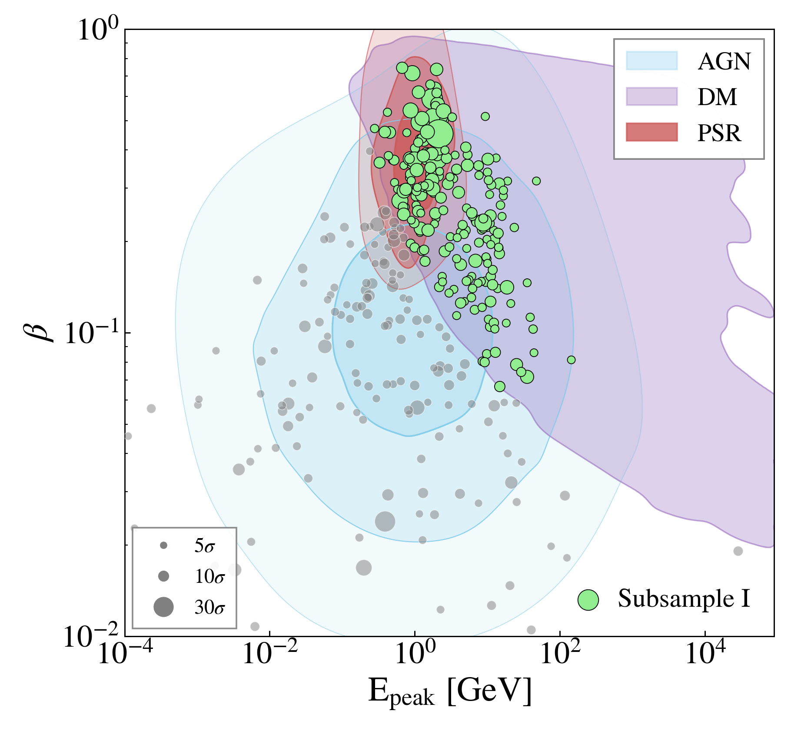
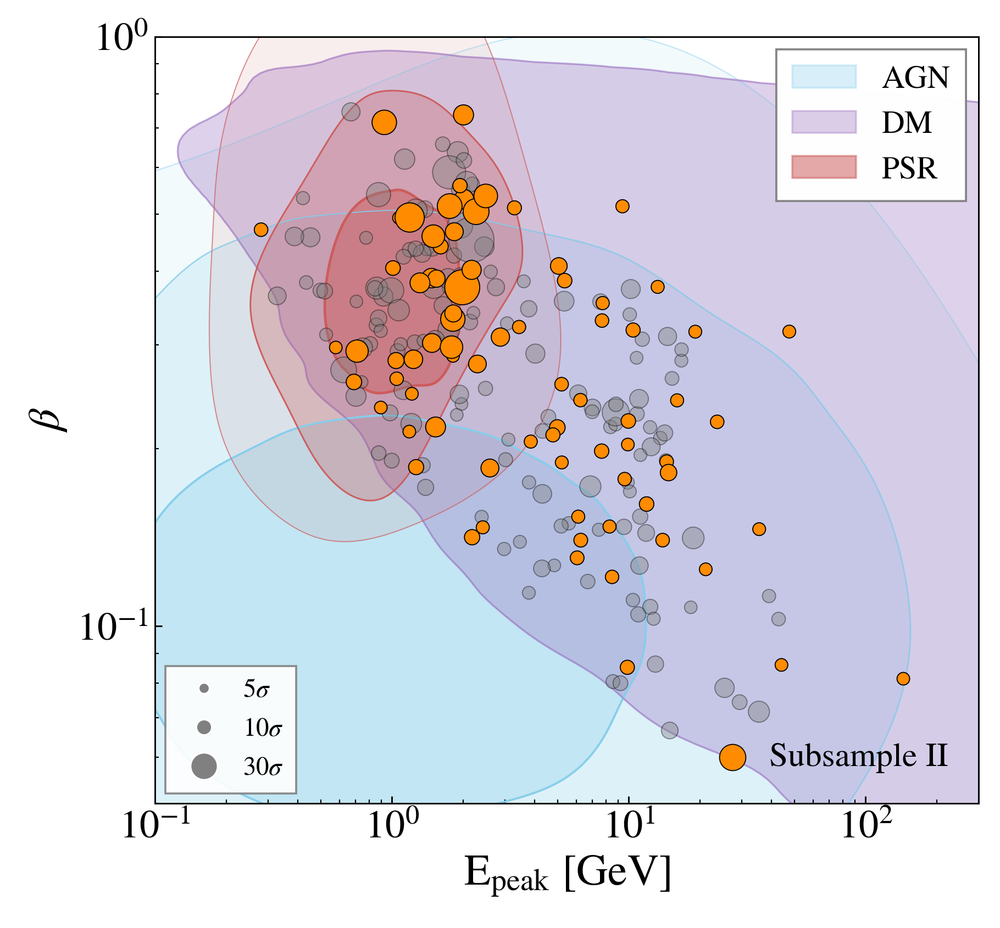
图注：由式（2）的对数抛物线表示得到的 $E_{\rm peak}$—$\beta$ 平面。蓝、红填色轮廓分别对应活动星系核和脉冲星的 1、2、3 倍标准差区域。紫色区域来自对 5 GeV 至 100 TeV 质量范围内各两道组合的暗物质湮灭谱拟合。左图以绿色显示子样本 I 的 220 个源，灰点为初筛通过的 445 个源中的其他对象。右图放大后用橙色标出子样本 II，灰点为经过多波段分析后从子样本 I 剔除的源。
怎么看这张图：先找紫色和红色填色的重叠，再看右图橙点仍落在这些重叠区域的情况。谱形筛选决定谁值得重做事件级拟合，后续还要处理普通天体谱的混淆。 展示两级候选的谱形筛选和类别重叠
来源与置信度：arXiv HTML；source verified；https://arxiv.org/html/2611.13095v1/figs_final/betaplot_all.png；https://arxiv.org/html/2611.13095v1/figs_final/betaplot_SubsampleII.png
图 5
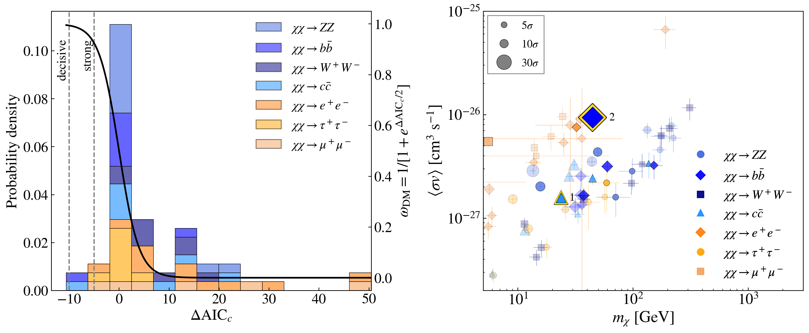
图注：左图为子样本 II 的 77 个未关联源的 $\Delta\mathrm{AIC}_c$ 分布及对应的相对 Akaike 权重 $\omega_{\rm DM}$，每个源仅显示拟合最佳的湮灭道，颜色见图例。右图为各源拟合的 WIMP 质量和截面。点大小按探测显著性 $\sigma\sim\sqrt{\mathrm{TS}}$ 缩放，正差值点更淡，非正差值点更实。黑金色圆环标出两颗达到试验校正前 $\Delta\mathrm{AIC}_c\leq-5$ 的候选源。编号 1 为 4FGL J2342.4−4739，编号 2 为 4FGL J1225.9+2951。没有源达到 $\Delta\mathrm{AIC}_c\leq-10$。
怎么看这张图：在左图核对两颗候选的负差值，在右图查看是否有多颗源集中在共同的质量附近。高探测 TS 描述伽马源存在性的证据，右图的透明度才对应谱模型的相对偏好。 检验候选的谱偏好与种群参数是否一致
来源与置信度：arXiv HTML；source verified；https://arxiv.org/html/2611.13095v1/figs_final/DeltaAICc_bestChannel_STACKEDhist_and_sigmav_mass_coloredByChannel_latex_globalfit_noJ0712J1827_v5_AICc_J1225bb_bbD.png
图 8
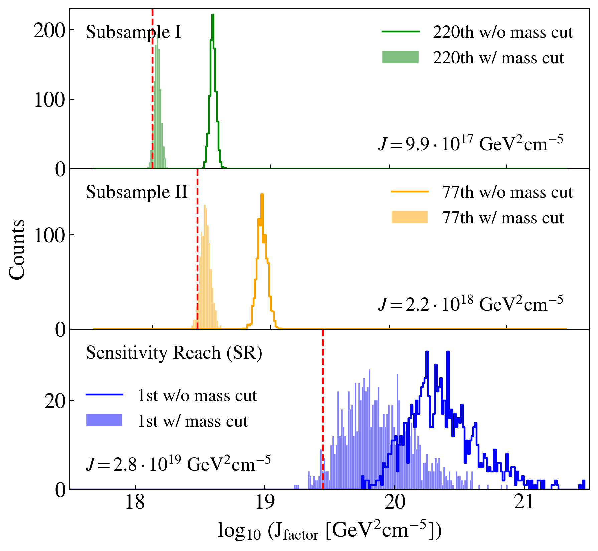
图注：在 1000 次重填 VL-II 模拟实现中，第 220 亮（上）、第 77 亮（中）与最亮（下）子晕的 $J$ 因子分布。空心和填充直方图分别表示剔除质量超过 $10^7M_\odot$ 的子晕前、后的结果。红色竖虚线为该情景采用的低端亮度，95% 的模拟实现取值高于这条线。
怎么看这张图：对照三个面板的横轴与分布宽度。剩余候选越少，阈值越受最亮子晕控制。最亮子晕波动也更大，灵敏度展望随模拟种群和观测者位置改变。 上限由候选计数映射到子晕亮度的直接证据
来源与置信度：arXiv HTML；source verified；https://arxiv.org/html/2611.13095v1/figs_final/Jfactors_v2.png
图 9
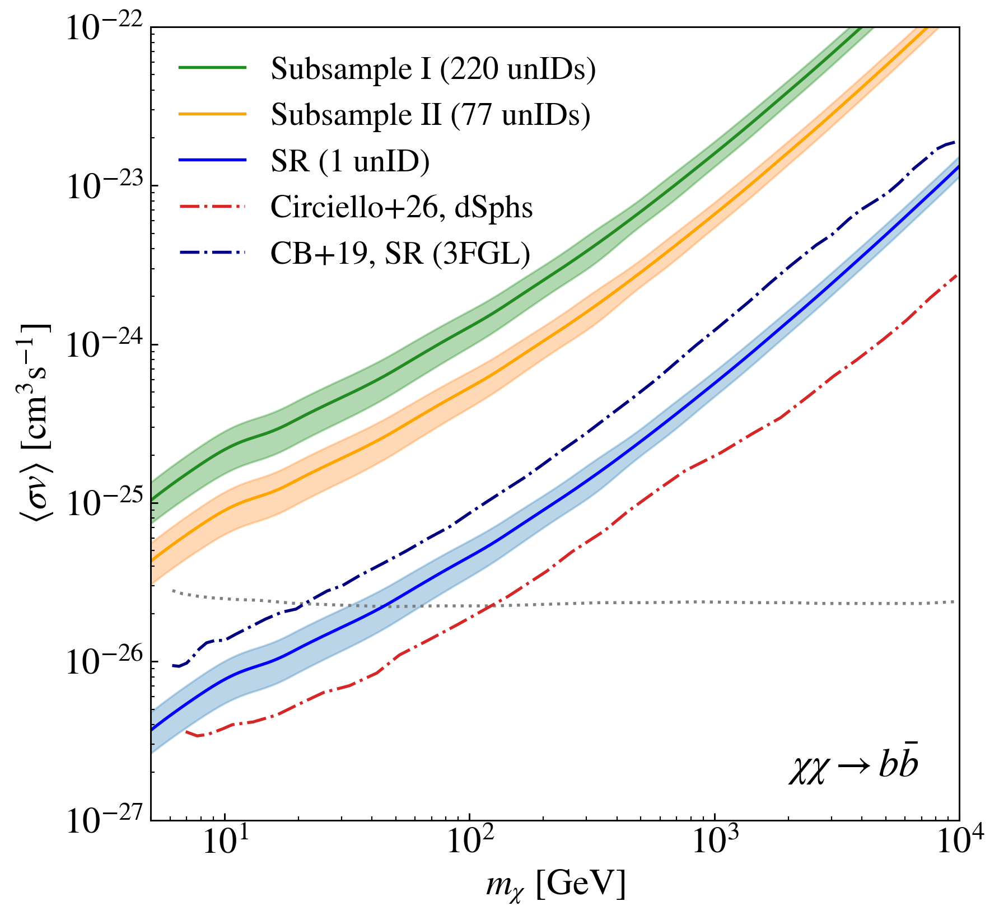
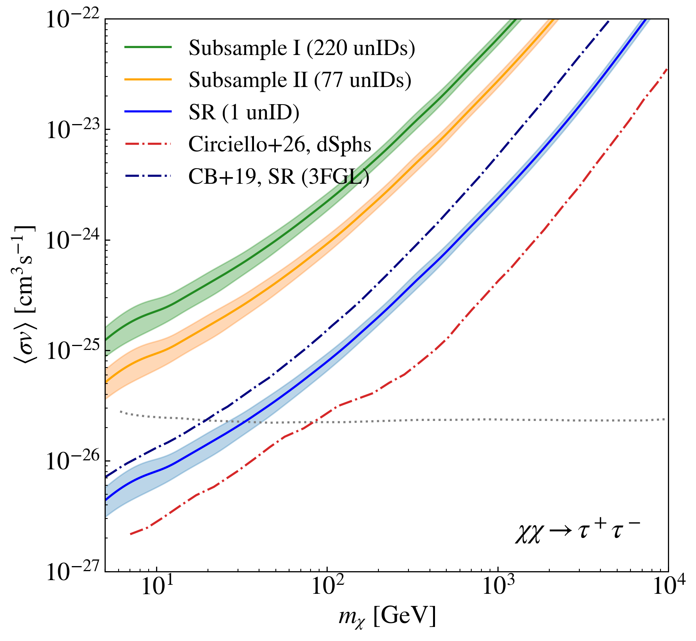
图注：上、下两面板分别给出 $b\bar b$、$\tau^+\tau^-$ 湮灭道的截面上限。绿线为 220 源子样本 I，橙线为 77 源子样本 II，蓝线为无相容未关联源时的灵敏度展望。阴影来自 $F_{\min}$ 的 1 倍标准差变化。灰色点线为热遗迹截面，红色点划线为 Fermi-LAT 矮球状星系分析，蓝色点划线为先前 3FGL 源表的对应灵敏度展望。
怎么看这张图：先看绿线和橙线，它们保留了仍可能是暗卫星的候选。蓝线与热遗迹线交叉的位置依赖零候选假设。阴影主要显示天空位置引起的灵敏度变化，子晕模拟的不确定性另通过所取的低亮度分位数处理。 对照当前两级约束和未来灵敏度情景
来源与置信度：arXiv HTML；source verified；https://arxiv.org/html/2611.13095v1/figs_final/Constraints_bb_v5.png；https://arxiv.org/html/2611.13095v1/figs_final/Constraints_tautau_v5.png
强相关工作
Coronado-Blázquez 等 2019 年用早期 Fermi-LAT 源表的未关联源建立了候选数与模拟子晕可探测数的比较。本文沿用计数逻辑，把 3FGL 换成覆盖 14 年的 4FGL-DR4，又用新事件、能段与模板重估灵敏度。比较图 9 的旧蓝色点划线与新蓝线可见，在同为灵敏度展望的情景下，改进约为两倍。
Circiello 等 2026 年的 Fermi-LAT 矮球状星系分析使用可见卫星的伽马数据和天体 J 因子，与本研究的未关联源计数约束构成互补。两者观测平台相同，但目标定义、星表选择函数和天体亮度的不确定性不同。可并行检验粒子截面，并分别追踪各自天体建模的系统误差。
同一事件 / 同类源线索：
相似工作：
基础理论 / 方法工作：
相反观点 / 张力线索：
（未提供）
3. Probing for anisotropies at different angular scales in the arrival directions of the cosmic rays detected at the Pierre Auger Observatory
- 来源：arXiv / astro-ph.HE
- 链接：https://arxiv.org/abs/2611.14233
- 作者：Pierre Auger Collaboration, A. Abdul Halim, P. Abreu, M. Aglietta, M. Ahmed, I. Allekotte, K. Almeida Cheminant, R. Aloisio
- 公告 / 来源日期：2026-11-11
- 阅读层级：重点精读
- 评分：novelty 8/10，importance 8/10，relevance 8/10，final 9.00/10
- 推荐理由：Auger完整I期曝光以统一球面核扫角尺度，比较不同能段偶极和局域过密，区分已知信号与新线索。
中文题目：用同一球面分布扫描 Auger 宇宙线的偶极与半人马座过密
做了什么：高能宇宙线到达方向的宽广偶极与局部过密通常用不同方法检验。Auger 将各向同性背景与一个 von Mises–Fisher 球面过密分量相加，改变该分量的角尺度，并把探测器的方向曝光纳入似然。数据为 2004–2022 年一期地面阵列在 4 EeV 以上的事件，总曝光 123,000 km² sr yr。拟合在固定角尺度下搜索中心与过密比例，用各向同性模拟计算机会概率。
8–16 EeV 的宽尺度信号最强，等效偶极幅度 $6.7\pm1.0\%$，与既有 Auger 测量一致。32 EeV 以上宽尺度与半人马座区域的中尺度峰在同一批数据中都出现；超过 40 EeV 时中尺度峰更显著，等效宽度 $14.4^\circ$。固定尺度的机会概率、扫描后选出的最小概率和源对应的证据属于不同量。两尺度共存为新的结构线索，仍要检验组成和磁偏转。
为什么重要：全局多极分析看整张天空上某个角尺度的功率，固定圆窗则看某个方向是否局部偏亮。用同一连续球面核在各尺度搜索，可比较最大过密怎样从宽偶极过渡到局部结构，并检验高能数据上一个尺度的起伏能否生成另一个尺度的现象。
理论 / 观测 / 仪器方法价值：可复用的是把非均匀方向曝光放入事件级似然，并在各能区和角尺度上生成配对的各向同性天空。实际应用时，应在模拟中重复中心和信号份额拟合，并将能区滑窗与尺度选择计入欲报告的总体显著性。
为什么应该关注：结果有助于在甚高能伽马射线、中微子或宇宙线多源比较里保持一致的空间假设。带电宇宙线的角尺度由能量、核电荷和磁场共同决定。半人马座附近过密可提示检查邻近活动星系及更远源族群，同一角域内多个天体的贡献仍需独立观测。
展开详细解读：文章讲解、背景、理论、重点章节、图表与相关工作
文章详细讲解
问题来自两种空间尺度。 8 EeV 以上已知大尺度方向调制，高能端还有半人马座附近局部过密线索。若分别用偶极和固定顶帽圆窗拟合，比较二者需要对齐角尺度、能区和试验次数。这里用球面连续核贯穿宽偶极到小热点。
阵列曝光与天空信号相乘。 在足够能量和天顶角内，地面阵列触发有效率高，但相对天区覆盖和曝光仍明显不均匀。作者在每个能区用竖直与倾斜事例的观测比例混合两类几何曝光。似然必须重新在可见天空归一，才能将赤纬曝光变化与宇宙线过密分开。
固定尺度下校准概率。 每个 $\kappa$ 固定时拟合信号比例和中心，对 10,000 次各向同性模拟重复同样搜索。模拟计数达不到极小概率时用三自由度 $\chi^2$ 外推。先看不同固定尺度的局部概率，再读能区滑窗和多尺度的整体证据。
最高能量的两种结构。 32 EeV 以上宽尺度拟合中心和较局域峰相距约 $45^\circ$。作者把各自最佳单分量模拟为母分布，再用相同流程检查另一峰。在所测条件下，两峰出现在不同位置与角尺度，单一分量并未显著提高产生另一峰的频率。物理上仍可能有多个源或带电核组成混合。
关键结果是怎么做出来的
使用一期 SD-1500 地面水切伦科夫阵列，能量超过 4 EeV、天顶角小于 $80^\circ$；天空覆盖约 85%。2021–2022 年只纳入未更新电子学的站，采用运行和站点完整性要求。竖直和倾斜簇射分别用地面信号和模拟缪子密度估能，再用荧光混合事例校准。
宽尺度检验在 $\kappa=0.1$ 处已近似偶极，而 $\kappa=10^{3.5}$ 相当于约 $1^\circ$ 宽度，接近方向分辨率。限制过密中心在 Auger 可见赤纬范围内，降低边缘低曝光少数事件被拟成强峰的风险。
标准四能段为 4–8、8–16、16–32 和 32 EeV 以上。8–16 EeV 的最优宽分量给 $p_{\rm iso}=1.1\times10^{-10}$（尾部外推），等效偶极幅度 $6.7\pm1.0\%$。16–32 和 32 EeV 以上等效偶极约 $10\pm2\%$ 与 $14\pm4\%$，误差变大，趋势与先前同一期数据结论相容。
能量滑窗引入重叠能区。6–13 至 32–64 EeV 多数区间最佳为宽尺度。超过 40 EeV 最优 $\kappa\simeq16$，等效宽度 $14.4^\circ$，中心赤经约 $210^\circ$、赤纬约 $-48^\circ$，位于 Cen A 周围既有热点区域。表 2 给的固定尺度机会概率约 $2.4\times10^{-4}$。
针对 32 EeV 以上，较窄峰的参数约 $\kappa=13$、宽度 $16.1^\circ$、中心 $(209^\circ,-50^\circ)$。宽尺度峰中心约 $(141^\circ,-44^\circ)$，两中心角距 $45^\circ\pm14^\circ$。以宽尺度作为模拟母分布，出现同等较窄且远离的峰的频率约 0.0028，纯各向同性模拟约 0.0026。反过来，以较窄过密作为母分布得到 0.014，各向同性约 0.011。
这些是依观察结果定义条件的模拟，检验单一结构会不会促成另一结构。样本沿能窗重叠、尺度搜索后取极值、单分量模型及相近的先前 Auger 数据共同限制了发现口径。图 4 的高平滑与低平滑结果可展示两种尺度，视场边缘的局部高亮仍可能只是低计数。
展开背景、理论、公式、模型和章节导读
背景知识
带电核为何失去指向性。 Lorentz 力令传播方向偏转，改变量通常随刚度 $E/Z$、途经磁场和距离改变。一个天体群的角分布可以很宽，高能或低电荷的子群才可能保留更紧的特征。
偶极在问什么。 偶极给大致一个方向比其对侧亮多少。它适合描述天空缓慢起伏，局部热点的强度和形状需要额外信息。
小尺度受分辨率与统计限制。 地面到达方向分辨率优于约 $1^\circ$，但高能宇宙线稀有。试验多个能阈值、位置和角宽时，随机天空也会出现局部最大，故需重复整套搜索评估尾部。
球面核如何衔接两端。 von Mises–Fisher 分布的宽核在球面近似偶极，窄核在中心局部近似二维高斯。一个连续参数控制宽度，方便比较不同尺度下数据与各向同性的相容性。
基础理论 / 方法脉络
球面方向用单位矢量表示，点积给出事件与候选过密中心的余弦。在各向同性底上加入一个归一过密分量，比例与宽度彼此相关。宽核下主导可辨识的量是两者的乘积。
实际事例分布是本征天空强度乘仪器曝光。即使本征天空各向同性，地面站也在某些赤纬积累更多计数。对每个候选参数做曝光加权归一，才可以比较似然。
固定集中度时，方向在可见天空内优化，同时估计信号比例。零假设下比例为零，中心无从定义。模拟应重复优化中心，以估计固定尺度下的机会概率；极小概率尾部要指出所用外推。
能区滑窗追踪由宽到窄的过渡，但相邻窗口大量重复事件。对最显著能窗、尺度或特定天体的发现显著性，要用含完整搜索过程的检验，单条曲线的固定尺度概率不足以代表这些量。
公式与推导
球面混合分布。 原文式 1，$\Theta$ 是距过密中心的角距，$\alpha$ 为无量纲过密比例，$\kappa$ 是无量纲集中度，$N$ 为总数。绕中心方位角积分后，自变量为 $\cos\Theta$。
宽核的偶极极限。 原文式 2，在 $\kappa\ll1$ 展开 $\kappa/\sinh\kappa$ 和指数项。常数修正使二次项的全天积分为零。$d,q$ 为无量纲幅度，$q$ 表示与该中心同轴的四极项。
窄核的角宽。 以下将原文 §3 的近似显式展开。$\Theta\ll1$ 且 $\kappa\gg1$ 时，去掉中心的常系数，分布形状与高斯比较得到弧度单位的等效宽度。
将同一个形状投到探测器天空。 原文式 3–4。$\boldsymbol u_0$ 是中心单位矢量，$S(\boldsymbol u)$ 是上述无量纲括号，$\omega$ 是方向曝光，$\mathcal N$ 的单位为曝光乘立体角。
与各向同性比较。 原文式 5–6。各向同性零假设在 $\alpha=0$，观测密度仍正比于曝光；对数似然比的正值表示引入过密改善拟合。
逐尺度模拟尾部。 原文 §3 的定义。$M=10^4$，$\widehat{\rm TS}$ 在每个固定 $\kappa$ 上拟合方向和比例；$m$ 标号模拟天空。当计数尾空时作者以 $\chi^2_3$ 外推。
报告偶极误差。 原文式 7，固定选出的中心后，对满足 $d=\alpha\kappa$ 的 $\alpha$ 最大化 TS。作者在 $\kappa\in[0.1,1]$ 和 $\alpha\in[0,1]$ 内用 TS 降 1 的位置给该幅度区间。
重叠窗口检查能量趋势。 原文式 8–9，以 EeV 为单位的上下边缘每三步翻倍，取最近整数；最后一个窗口没有有限上界。相邻窗的计数因此共享。
模型拟合 / 应用方法
使用一期 SD-1500 观测，分别对直立和倾斜空气簇射建模，结合混合事件标定能量。能量统计误差从低端约 15% 降到 20 EeV 以上约 7%，整体能标系统约 14%。能区阈值和组成比较都需保留这一口径。
每个能区曝光由实测直立/倾斜事例比例组合。给定角尺度，差分进化优化信号比例和过密中心；中心要求赤纬小于 $+44.8^\circ$，减少边缘少数计数的影响。小的时变阵列非均匀性和倾斜未纳入，原文估计其对偶极幅度的影响不超过 0.1%。
机会概率以方向曝光生成各向同性事例，拟合固定尺度的最大 TS。10,000 次模拟直接分辨不到 $10^{-10}$ 的尾部，文中极小概率来自 $\chi^2_3$ 近似。图的各向同性带和表的最小 $p_{\rm iso}$ 应按固定尺度或扫描选择各自阅读。
高能端的次峰检验分别用宽核和窄核生成事例，并在另一尺度范围内重复拟合。概率同时要求另一峰达到观测强度并与首峰足够远。它们是数据定义条件下的诊断，未完成全能窗的双分量模型比较。
平滑图用两种角宽展示视觉结构，几何曝光边缘受计数涨落影响。模型只含一个轴对称过密核，源方向偏移、银河磁场畸变和不同核组分仍可能使真实天空更复杂。
重点章节 / 结果段落怎么读
- §2 先读 SD-1500 两类事例的方向和能量估计，确认阵列视场与曝光。
- §3 式 1–7，分别理解集中度两极限、曝光归一、固定尺度的机会概率和偶极误差。
- §4.1 图 1 与表 1，比较四个标准能区，留意很小的概率来自尾部外推。
- §4.2 表 2、图 4 及双峰条件模拟，检查重叠能窗和角尺度随能量的变化。
- §5 查看多个源群、组成和磁偏转怎样生成相似图样，以及未来组成测量的检验。
关键图表与解读
图 1
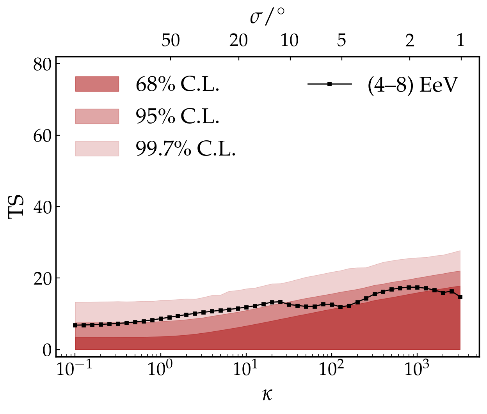
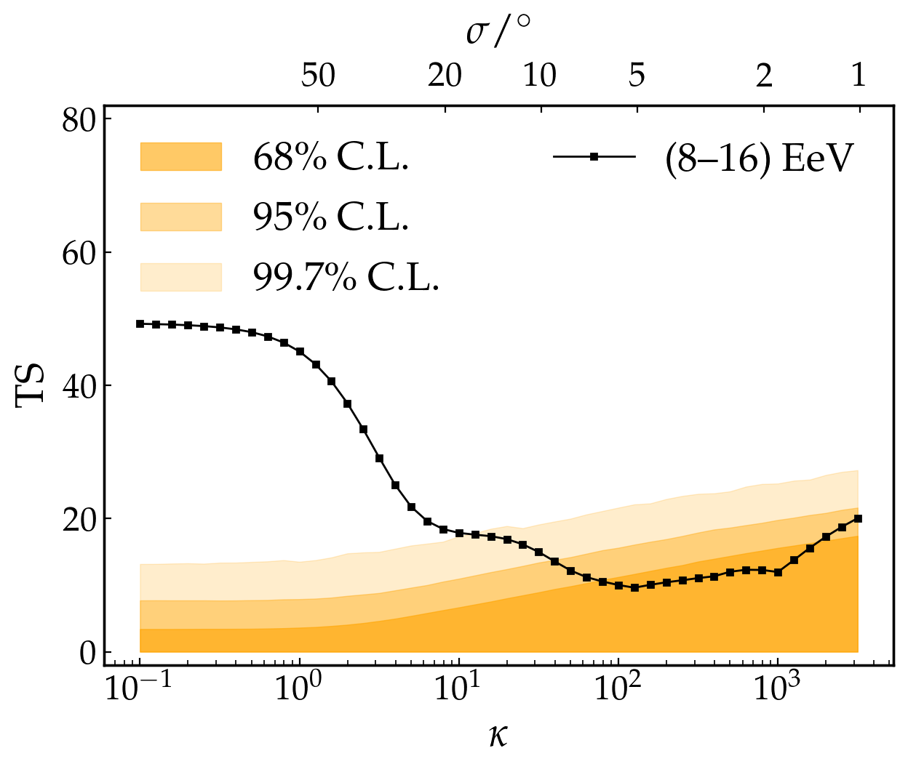
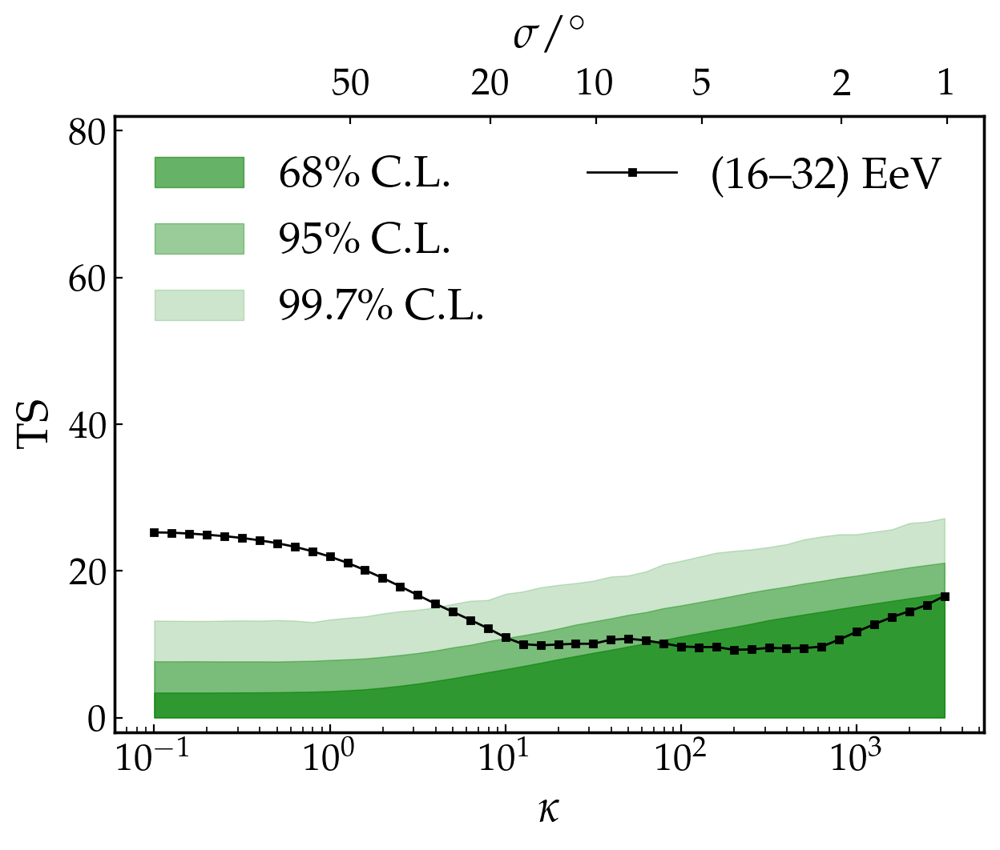
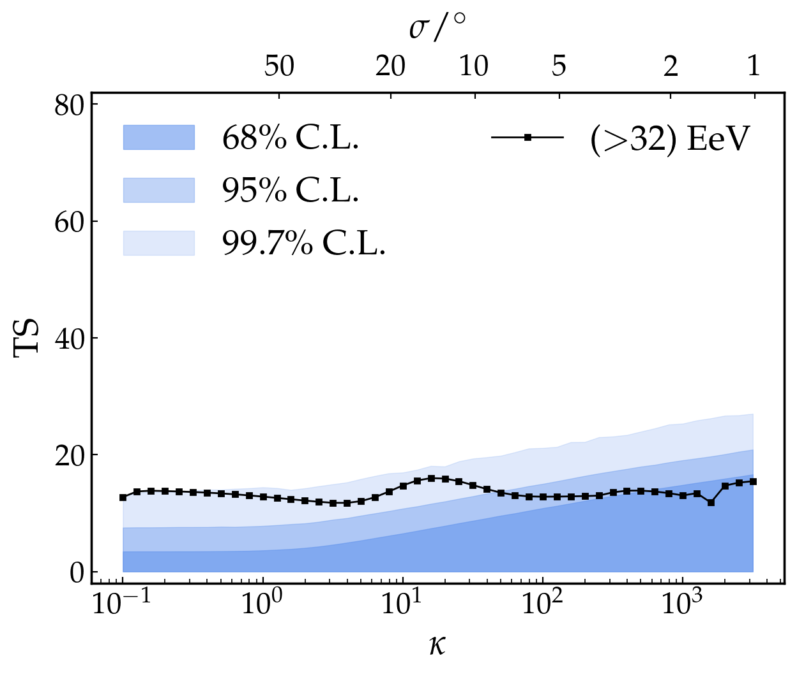
图注：四个标准能量区间中沿集中度 κ 剖面拟合得到的 TS。面板 a 至 d 依次为 4–8、8–16、16–32 和大于 32 EeV。阴影分别为 68%、95% 与 99.7% 区间，由各能段匹配事件数的 10,000 次各向同性模拟得到。
怎么看这张图：每个面板先读横轴集中度，再把观测 TS 曲线和各向同性带对照。8–16 EeV 在宽尺度端偏离最强。 展示同一尺度扫描在四个标准能区的不同结果。
来源与置信度：arXiv HTML；source verified；https://arxiv.org/html/2611.14233v1/figures/plots_marginalization/plot_ts_4.0_8.0.png；https://arxiv.org/html/2611.14233v1/figures/plots_marginalization/plot_ts_8.0_16.0.png；https://arxiv.org/html/2611.14233v1/figures/plots_marginalization/plot_ts_16.0_32.0.png；https://arxiv.org/html/2611.14233v1/figures/plots_marginalization/plot_ts_32.0_200.0.png
图 4
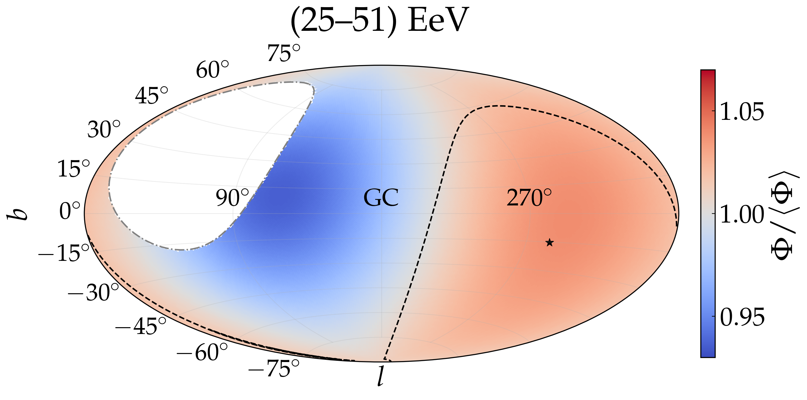
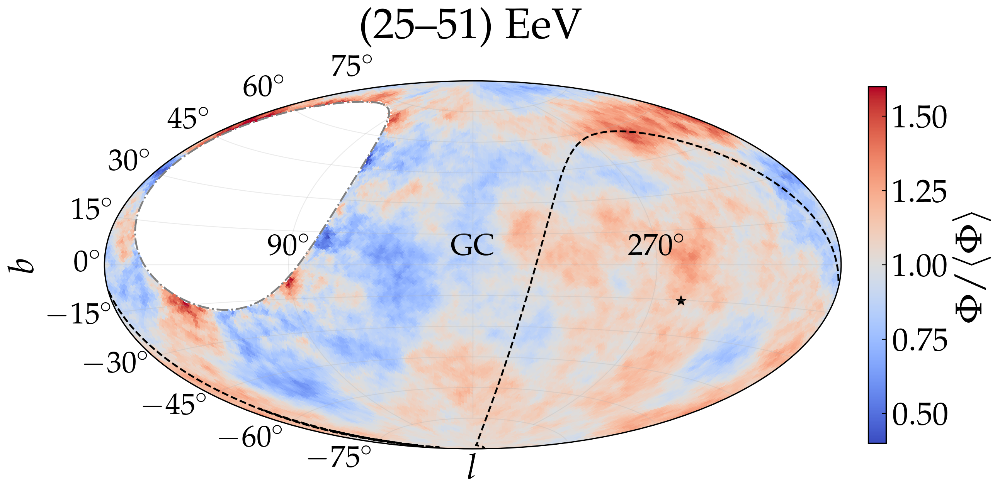
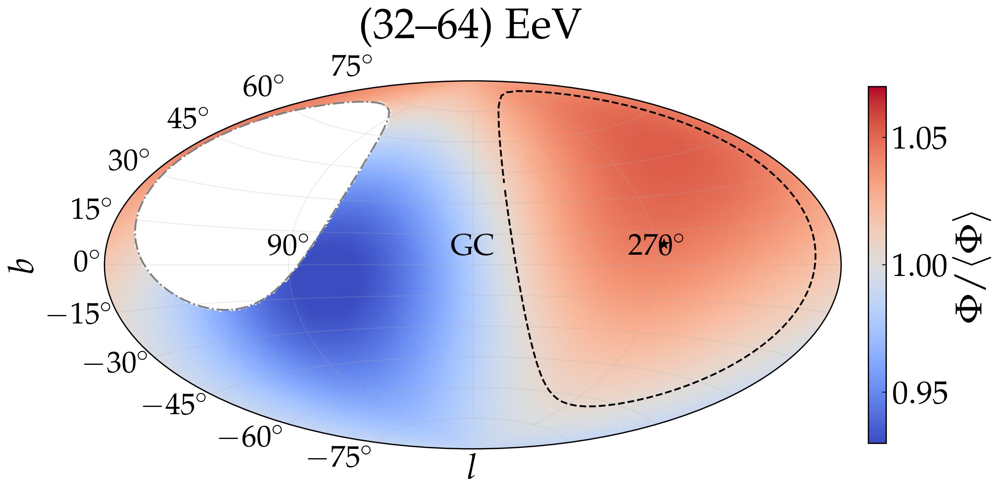
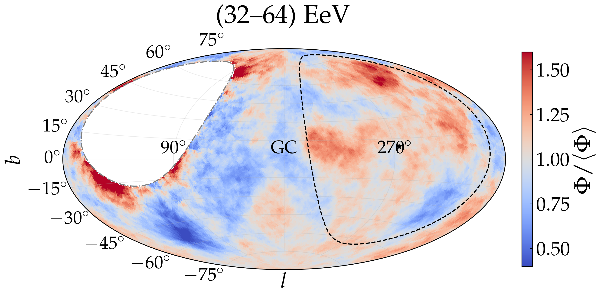
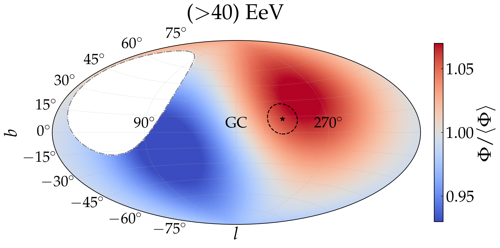
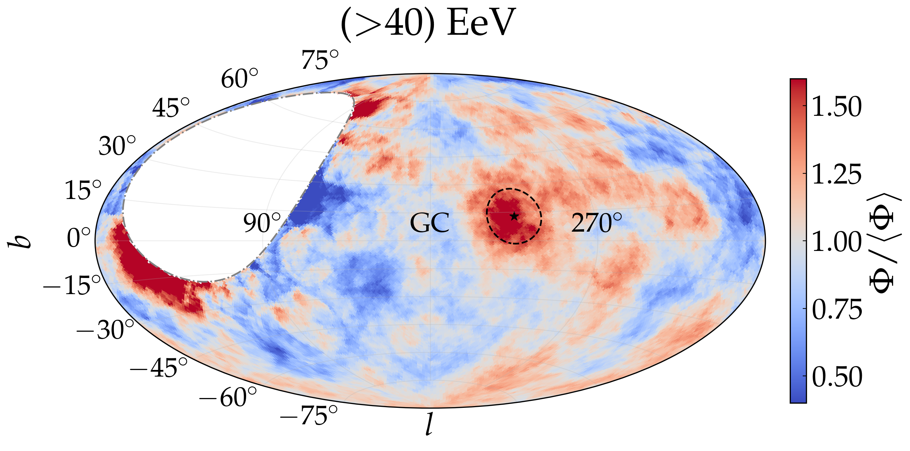
图注：三个能区的银河坐标通量图，a、b 图面标为 25–51 EeV（原图注写作 25–50 EeV），c、d 为 32–64 EeV，e、f 为大于 40 EeV。左列以等效 45° 宽的 von Mises–Fisher 核平滑，右列用 15°。黑星是相应拟合中各向同性机会概率最低的过密中心，虚线区域包含该核通量的 39.3%。
怎么看这张图：对同一行先比左右两种平滑，再沿能量读半人马座区域的局部亮斑。黑星是拟合中心，边缘亮斑受低计数影响。 展示高能端偶极与局域过密的角尺度和位置。
来源与置信度：arXiv HTML；source verified；https://arxiv.org/html/2611.14233v1/figures/maps_flux/map_45_25.0_51.0_flux_gal.png；https://arxiv.org/html/2611.14233v1/figures/maps_flux/map_15_25.0_51.0_flux_gal.png；https://arxiv.org/html/2611.14233v1/figures/maps_flux/map_45_32.0_64.0_flux_gal.png；https://arxiv.org/html/2611.14233v1/figures/maps_flux/map_15_32.0_64.0_flux_gal.png；https://arxiv.org/html/2611.14233v1/figures/maps_flux/map_45_40.0_200.0_flux_gal.png；https://arxiv.org/html/2611.14233v1/figures/maps_flux/map_15_40.0_200.0_flux_gal.png
强相关工作
Auger 2017 年大尺度各向异性首先报告 8 EeV 以上的大尺度调制；19 年一期分析刻画偶极幅度随能量的变化。本文把同类一期事件放入统一球面核，得到兼容的宽尺度结果。数据部分重合，两个结果不能按独立探测相乘。
32 EeV 以上的一期方向研究报告过 Cen A 周围的候选过密。本文在同一可变角尺度似然中看较窄结构与偶极共存。Harari 等的湍磁传播提供窄核与扩散偶极之间的物理参考。观测上的球面拟合核仍无法唯一确定场结构或源身份。
同一事件 / 同类源线索：
相似工作：
基础理论 / 方法工作：
相反观点 / 张力线索：
（未提供）
相关简报
1. Detectability of Seyfert galaxies in point-source and stacking searches with a global network of neutrino telescopes
- 来源：arXiv / astro-ph.HE
- 链接：https://arxiv.org/abs/2611.13247
- 作者：Lena Saurenhaus, Francesca Capel, Foteini Oikonomou
- 公告 / 来源日期：2026-11-11
- 阅读层级：相关简报
- 评分：novelty 7/10，importance 8/10，relevance 10/10，final 9.40/10
- 推荐理由：用物理冕中微子模型连接多阵列点源及堆叠曝光，给出Circinus可检验条件；时间是有条件预报。
中文题目：从 Circinus 到塞弗特星系堆叠，多台中微子阵列的条件预测
问题、方法与结论：作者以磁化活动星系核冕内的随机加速模型预测中微子谱，用 BASS 星表的本征 2–10 keV 亮度选十个点源和 213 个堆叠目标，排除已作为已知源处理的 NGC 1068。PLEνM 把 IceCube、Baikal-GVD、KM3NeT/ARCA 和 P-ONE 的视场、穿越缪子径迹能量及角距折进预期似然，比较三套冕参数。若塞弗特星系解释 100 TeV 以下弥散通量，且 Circinus 效率不低于样本平均，预测可在 2038 年前达 5σ。
意义与贡献：亮度相同的两种源，若中微子谱峰分别在不同能段，落入大气背景的比例不同。冕模型将 X 射线选样、源谱和探测器响应相连，说明北半球水探测器的加入可改善对南天塞弗特源的覆盖。
可借鉴之处：可借鉴的是按探测器位置、能量和角分辨率选择堆叠样本，并逐一移除最亮源检查贡献。作者的全部 213 源堆叠在两个基准模型下约于 2035–2036 年达 5σ，移除 Circinus 后预计到 2040 年约 4σ。
局限与关注点：结果是条件预测。非 IceCube 阵列的有效面积从 IceCube 响应旋转近似，并采用建设起始年份和水介质角分辨率假设。Fermi 与 COMPTEL 已限制极乐观的冕参数，早期 Baikal-GVD 点源未检出进一步限制 Circinus 的亮端预期。
图 5
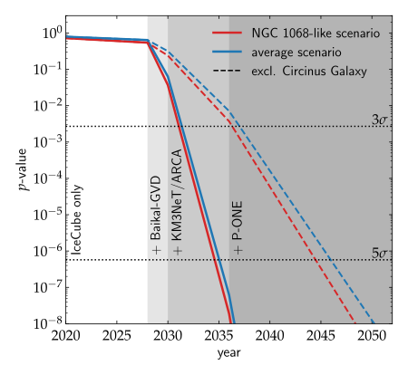
图注：本征 2–10 keV X 射线通量至少为 10⁻¹¹ erg cm⁻² s⁻¹ 的 BASS 源的堆叠预期 p 值。红色为 NGC 1068 类情形，蓝色为平均情形，实线包含 Circinus，虚线移除。灰带表示新阵列假定起始时间，黑点线对应 3σ、5σ。
怎么看这张图：比较同色实线和虚线，差距主要反映 Circinus 在堆叠中的权重。灰区为作者假定的阵列起始时间。 展示未来联合检验对最亮点源的依赖。
来源与置信度：arXiv HTML；source verified；https://arxiv.org/html/2611.13247v1/p_value_vs_T_stacking_BASS_sources.svg
2. Flux Variation of the Crab Pulsar Observed Using Fermi LAT and NuSTAR
- 来源：arXiv / astro-ph.HE
- 链接：https://arxiv.org/abs/2611.13391
- 作者：Koothodil Abhijith Augustine, Hsiang-Kuang Chang
- 公告 / 来源日期：2026-11-11
- 阅读层级：相关简报
- 评分：novelty 8/10，importance 7/10，relevance 10/10，final 9.35/10
- 推荐理由：把17年LAT和13年NuSTAR蟹脉冲通量及光子指数置于长期稳定性检验，误差和物理归因需全文核查。
中文题目：蟹状脉冲星的长时标脉冲通量与谱形变化
问题、方法与结论：团队将 17 年 Fermi-LAT 数据按月折叠相位，在非脉冲窗拟合星云和其他背景，再固定相应参数提取脉冲谱；对 13 年 NuSTAR 指向数据，以相同非脉冲相位作谱背景。LAT 0.1–100 GeV 的月通量多数起伏为数个百分点，个别接近 20%。NuSTAR 3–79 keV 通量在去掉 2014 年前数据后仍不符合线性趋势，而该子集的光子指数与线性模型相容。
意义与贡献：在这两段能区，同一仪器内拟合通量与光子指数呈负秩相关，LAT 和 NuSTAR 的系数为 −0.35 和 −0.63。长期稳定假设对脉冲星作标定或叠加相位谱有直接影响，且应把以往蟹状星云耀发与这里的脉冲变化分开。
可借鉴之处：可在每个时间窗同时检查开脉冲、非脉冲以及星云分量；LAT 用替换有效面积响应和扰动弥散模板评估系统变化，NuSTAR 用相位差谱处理星云贡献。相关检验也应保留通量与指数的拟合协方差。
局限与关注点：同月 LAT 与短时 NuSTAR 通量无明确相关，两个采样窗并不等长，不能由此确定时变下限。去掉早期数据后 X 射线指数的趋势证据减弱。磁层粒子分布或内部磁场调整属于作者讨论的物理解读。
图 1
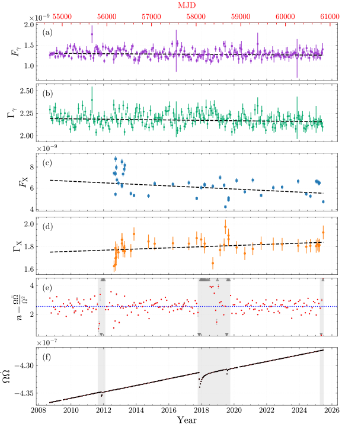
图注：蟹状脉冲星的谱和计时演化。a、b 为每月 Fermi-LAT 0.1–100 GeV 脉冲通量及指数，c、d 为 NuSTAR 3–79 keV 对应量；e 为制动指数，灰三角为超出显示范围的点；f 为单位转动惯量的自转能量变化率。底轴是年份，a 的顶轴为修正儒略日。黑虚线为线性拟合，灰带标记主要自转突变及恢复，误差棒为 1σ。
怎么看这张图：前四格按时间比较两波段通量和指数，虚线为线性趋势。后两格标记自转量和主要突变，不应误读为星云光变。 直观看到长时段脉冲通量和指数的不同稳健性。
来源与置信度：arXiv HTML；source verified；https://arxiv.org/html/2611.13391v1/lc.svg
3. Constraints on Lorentz Invariance Violation from PeV Gamma Rays of Cygnus X-3 Observed by LHAASO
- 来源：arXiv / astro-ph.HE
- 链接：https://arxiv.org/abs/2611.14028
- 作者：Zhen Cao, F. Aharonian, Y.X. Bai, Y.W. Bao, D. Bastieri, X.J. Bi, Y.J. Bi, W. Bian
- 公告 / 来源日期：2026-11-11
- 阅读层级：相关简报
- 评分：novelty 7/10，importance 8/10，relevance 9/10，final 9.05/10
- 推荐理由：Cygnus X-3 PeV事件转为二阶光子衰变洛伦兹破缺上限，物理限制明显，方法本身延续已有运动学检验。
中文题目：天鹅座 X-3 的 PeV 伽马谱约束超光速洛伦兹破缺
问题、方法与结论：LHAASO 将 KM2A 2019–2024 年间四段天鹅座 X-3 活跃期合并，筛选后有效数据 692.8 天，已报告最高约 3.7 PeV 光子。研究在源谱上试验不同尖锐截断，经能量响应折到重建能量，用模拟比较有、无截断。以两组光子靶参与光强子过程的谱为基准，分箱与无分箱所得截断能量 95% 置信下限分别约为 3.05 与 3.06 PeV。
意义与贡献：在所检验的超光速色散模型中，足够高能的光子可衰变为正负电子或分裂为三个光子，改变高能端谱形。根据第二阶三光子分裂，推得破缺能标下限约 1.73×10²⁶ eV，约为 0.014 倍普朗克能标；正负电子衰变通道给另一下限。
可借鉴之处：对少事件的高能谱，做截断模型与无截断模型的事件级前向折叠，再用模拟构造 CLs，能保留能量迁移与源谱差别。可将分箱与无分箱对照作稳定性检查。
局限与关注点：最大系统项来自源谱。用纯幂律替代基准谱，截断下限变化约 9.5%；合计约 9.6%。三光子分裂的换算采用约 9 kpc 距离和指定色散形式，结论针对这些传播过程。
图 3
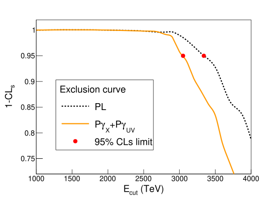
图注：两种源谱模型的 1−CLs 随截断能量变化。红点标记 CLs 方法在 95% 置信水平下的截断能量边界。
怎么看这张图：比较两种源谱曲线达到 95% 判据的截断能量，并用差距理解系统项。该阈值由所有选中事例和仪器响应得到。 显示 3.05 PeV 截断下限如何从模型扫描得到。
来源与置信度：arXiv HTML；source verified；https://arxiv.org/html/2611.14028v1/exclusion_curve_all_2.svg
4. Early X-ray emission as an observational diagnostic of gamma-ray burst progenitors
- 来源：arXiv / astro-ph.HE
- 链接：https://arxiv.org/abs/2611.12945
- 作者：Annarita Ierardi, Alessio Mei, Gor Oganesyan, Stefano Ascenzi, Samuele Ronchini, Marica Branchesi, Biswajit Banerjee, Maria Edvige Ravasio
- 公告 / 来源日期：2026-11-11
- 阅读层级：相关简报
- 评分：novelty 8/10，importance 7/10，relevance 9/10，final 9.00/10
- 推荐理由：Swift 23例的时分辨软硬X射线拟合及两种谱量关系为前身星识别增加诊断；类标签、样本选择与迁移条件限制发现强度。
中文题目：用伽马暴早期 X 射线陡降辅助辨认前身星
问题、方法与结论：作者选择 23 个有红移、早期 X 射线陡降清楚且峰通量达到门槛的 Swift 长暴，作为塌缩星候选。用 XRT 和 BAT 的 0.3–150 keV 范围做时分辨谱，比较快冷却同步辐射的冷却频率以及经验 Band 谱峰与各向同性等效光度的关系，并以先前分析的并合暴候选为对照。两种谱模型下两类样本关系分开，已有并合证据的长暴 GRB 211211A 也落在并合一侧。
意义与贡献：爆发持续时间有重叠，新增的早期陡降谱量让长暴也可以用光变相位和谱光度关系辅助分类。作者把数据限制在 0.5–4 keV，再对陡降段积分拟合吸收幂律，仍看到并合候选较硬且较暗。
可借鉴之处：在 Einstein Probe 宽视场 X 射线望远镜的数据上，候选可用软 X 射线光度与指数作初筛，再联系提示暴、高能谱或千新星跟进。未知红移时可在一组假设红移下计算轨迹，观察分类有多敏感。
局限与关注点：样本要求正轴伽马暴证据、0.3–10 keV 陡降峰通量大于 10⁻⁸ erg cm⁻² s⁻¹，并偏向可测红移与亮陡降的事件。样本为候选标签，迁移到普通快 X 射线暂现源需独立验证选择效应和分类表现。
图 2
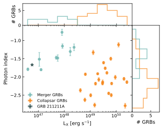
图注：以吸收幂律拟合 0.5–4 keV 陡降段的时间积分谱，得到光子指数与 X 射线光度。青色点为并合候选，橙色点为塌缩星候选，星号为 GRB 211211A。右侧和上方分别为指数和光度的投影分布。
怎么看这张图：看两类样本在光度和光子指数上的位置及边缘分布，特别留意长持续时间的 GRB 211211A 落在哪一组附近。 用窄软 X 射线能带展示候选群体的简化诊断。
来源与置信度：arXiv HTML；source verified；https://arxiv.org/html/2611.12945v1/PI_Lx_FINAL.svg
5. Cross-experiment tests of the atmospheric-muon excess
- 来源：arXiv / astro-ph.HE
- 链接：https://arxiv.org/abs/2611.13833
- 作者：G.I. Rubtsov, S.V. Troitsky
- 公告 / 来源日期：2026-11-11
- 阅读层级：相关简报
- 评分：novelty 8/10，importance 7/10，relevance 9/10，final 9.00/10
- 推荐理由：统一基准比较四个不同测量的能量与天顶角，连接早期高能介子和总簇射muon问题，限于基准模型和跨实验系统误差。
中文题目：四类大气缪子测量对照同一簇射基准
问题、方法与结论：团队将地面 BESS、L3+C，深海 KM3NeT 和地下锦屏的缪子观测除以各自参考预言。各计算都用 SIBYLL 2.3d 强子模型与 GSF19 初级通量基准，但保留各实验的传播、低能相互作用和仪器响应。L3+C 多数比值约 1.2–1.3，KM3NeT 的 ORCA6 约 1.36–1.39、ARCA6 约 1.51–1.74。锦屏阈上积分通量也多高于中心预测。
意义与贡献：空气簇射中的低能缪子总数对较晚几代碰撞敏感。能量较高的大气缪子更偏向由早期、高能介子衰变产生，因此对强子模型有不同约束。若同一机制解释两种超额，它还应增加高能母介子的有效供给。
可借鉴之处：可把早代产生的前向带电介子、总缪子数和大气中微子谱分别用于蒙特卡洛验证。比较不同装置时，应按各自的观测量和阈值折叠相同物理模型，再用对数据与预测的比值显示共性。
局限与关注点：地面差分谱、地下阈上通量和深海事例率的横轴能量含义不同。BESS 与 L3+C 的绝对归一差异可伪装成能量斜率；未知误差相关限制联合显著性。论文也未建立稳健的能量或天顶角趋势。
图 1
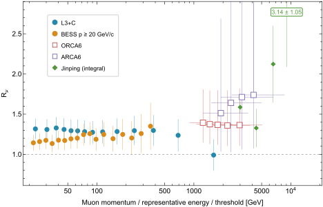
图注：大气缪子观测相对于 SIBYLL 2.3d 加 GSF19 中心预测的比值。地面数据纵误差包含实验、保留的角度散布和模型项。KM3NeT 纵误差含统计与组内相干参考变动，横棒为海平面能量分布的中间 68%。锦屏点为地下重建的阈上积分通量，最右超出纵轴的点用数值注明。
怎么看这张图：纵轴高于 1 表示观测超出中心预测。横坐标按实验分别读，地下阈上积分点与深海事例率不可视为同一种差分能谱。 显示参考预言下超额跨装置出现，以及不同能量口径。
来源与置信度：arXiv HTML；source verified；https://arxiv.org/html/2611.13833v1/energy_comparison.svg
6. Empirical constraints on cosmic-ray scattering in NGC 1333 from dust polarisation
- 来源：arXiv / astro-ph.HE
- 链接：https://arxiv.org/abs/2611.14203
- 作者：Szu-Ting Chen, Ellis R. Owen, Alison M. W. Mitchell, Shih-Ping Lai, Sheng-Jun Lin
- 公告 / 来源日期：2026-11-11
- 阅读层级：相关简报
- 评分：novelty 8/10，importance 7/10，relevance 9/10，final 9.00/10
- 推荐理由：尘埃偏振结构函数约束磁涨落与准线性散射，双尺度比较新颖；探测能段不同且自由程超越局部区域，不能直接外推宏观扩散。
中文题目：用尘埃偏振推断 NGC 1333 的局部宇宙线散射
问题、方法与结论：团队分析 JCMT/POL-2 的 NGC 1333 九个子区及 ALMA 的 IRAS 4A 两个核心子区。用尘埃偏振方向变化的结构函数推断磁场涨落谱，再把可测尺度映射为质子的回旋共振尺度，以准线性散射换算沿场的有效扩散系数。数据支持的质子能量约为 NGC 1333 的 0.24–5.3 PeV 与 IRAS 4A 的 10–57 TeV，代表系数约 3×10²⁸ 至 10³¹ cm²/s。
意义与贡献：这种做法从局地磁场结构约束散射，给出了云与核心内部的不均匀性。两仪器约束的能区不同，同能量比较要外推；论文在所用外推下得到核心散射较强约一至两个量级。
可借鉴之处：对分子云附近的强子伽马辐射，可以把磁涨落与独立气体图放在一起，检查云级输运模型所用的扩散是否与局地散射一致。能量低于结构函数支持时，图中的 Kolmogorov 延拓可作参数试验。
局限与关注点：在直接支持的能区，散射自由程超过各分区尺度。因此给出的系数首先量化局部散射，云尺度扩散要由多区域传播建立。偏振约束天空平面方向，场强、投影及准线性假设仍影响数值。
图 3
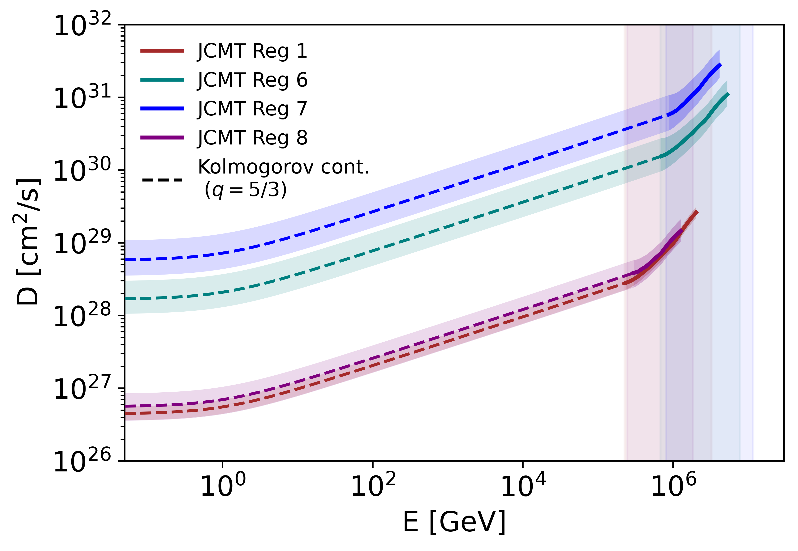
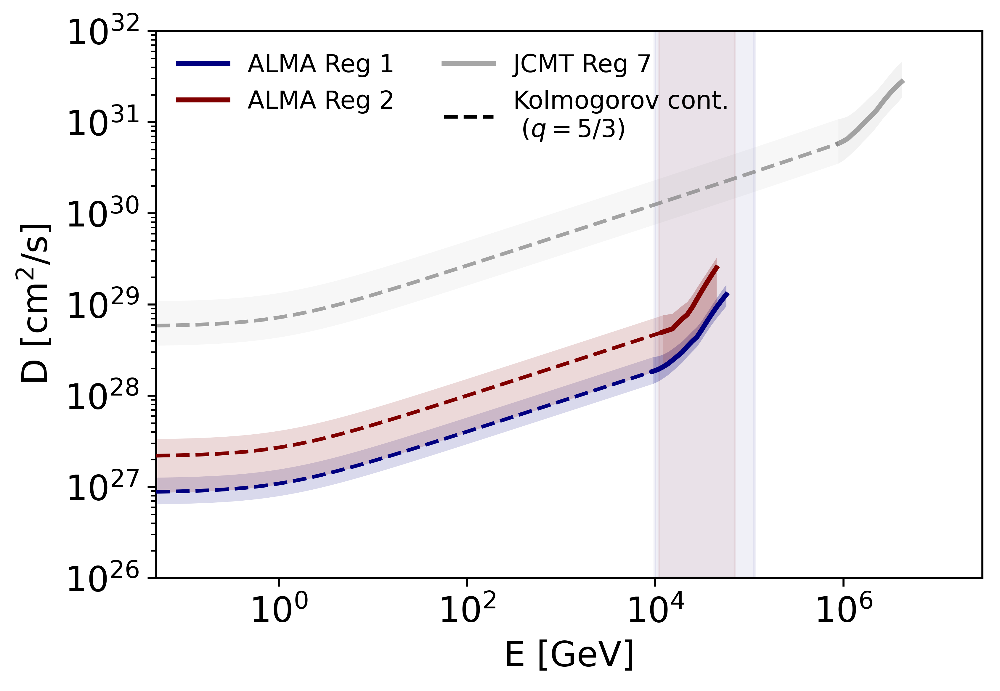
图注：JCMT 的 NGC 1333 区域（左）与 ALMA 的 IRAS 4A 区域（右）的宇宙线扩散系数随能量变化。实线为数据支持段，虚线为向低能的 Kolmogorov 延拓，竖直阴影为名义能段，曲线周围阴影为自助抽样误差。颜色对应图 1 区域，右图灰色为包含 IRAS 4A 的 NGC 1333 第 7 区。
怎么看这张图：实线是结构函数支持的能段，虚线是假定低能谱的延拓。左右图实线不重叠，比较散射须先明确共用能量处的外推。 在图上标出数据直接约束与外推的分界。
来源与置信度：arXiv HTML；source verified；https://arxiv.org/html/2611.14203v1/new_figs/D_NGC1333_kolmogorov.png；https://arxiv.org/html/2611.14203v1/new_figs/D_err_IRAS4A_trim.png
7. Two-component $γ$-Ray Structure from the CR Sources
- 来源：arXiv / astro-ph.HE
- 链接：https://arxiv.org/abs/2611.14107
- 作者：Lin Nie, Ming-Jun Chen, Zong-Kang Zeng, Yi-Qing Guo
- 公告 / 来源日期：2026-11-11
- 阅读层级：相关简报
- 评分：novelty 7/10，importance 7/10，relevance 9/10，final 8.70/10
- 推荐理由：把多源两段伽马谱与环境气体关系、同源中微子谱放入可检验模型；模板与环境非唯一。
中文题目：银河宇宙线源的伽马谱双成分：分开的峰与重叠的肩
问题、方法与结论：作者把早先用于 Cas A、IC 443 等遗迹的双成分模型扩展到多个银河高能源，使用已发表的 GeV 到甚高能光子谱拟合。低能端主要由分子团块内受压缩与再加速的银河宇宙线碰撞产生，高能端由源附近新加速粒子提供，可通过电子逆康普顿散射或质子碰撞辐射。模型中低密度环境与致密团块的反差可形成分开的双峰，环境整体密度高时，谱分量通常更平滑地重叠成宽肩。
意义与贡献：对 LHAASO 和成像大气切伦科夫望远镜的银河源，形态与光谱不连续处往往来自不同的空间区域。本文把气体环境、成分叠加与可见的谱形连接起来，可解释为什么相似的两类粒子贡献未必总呈现两个清楚的峰。
可借鉴之处：可从相同空间选区的 GeV、TeV 频谱与分子气体模板起步，比较同一模型能否同时解释空间分布和谱形。拟合光子的质子成分还能传播到中微子预测，再将结果与相应区域的中微子上限对照。
局限与关注点：高能分量的电子和质子解释依赖源与分子团块几何，部分源对应关系仍有投影混淆。绿色区间传播的是所用模型参数的不确定性。中微子曲线来自伽马数据约束的模型，真实源区粒子组成和气体距离仍待独立核验。
图 3
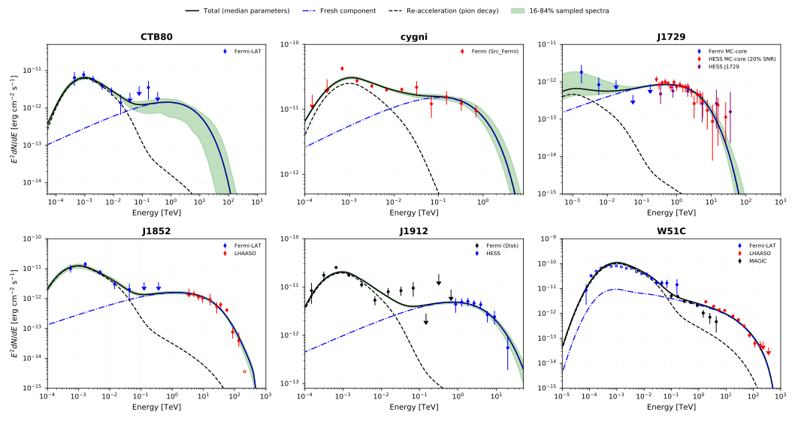
图注：$\gamma$ Cygni、CTB 80、J1729、J1852、W51C 和 J1912 的伽马射线谱，画法沿用图 1。黑实线为后验中位参数给出的总谱，分量曲线依各面板模型与图例标出。绿色阴影表示参数抽样所得模型谱的第 16–84 百分位。数据点来自各面板对应的已发表观测。
怎么看这张图：逐个看数据选区与模型曲线。若两个分量重叠，高能贡献可以仅显为宽肩。J1729 面板含不同天区的数据，比较归一化前要先确认选区。 六源实测谱与不同气体环境的分量拟合
来源与置信度：arXiv HTML；source verified；https://arxiv.org/html/2611.14107v1/gamma_sub2.svg
8. NuSTAR view of the NGC 4151 corona: thermal balance and astroparticle constraints
- 来源：arXiv / astro-ph.HE
- 链接：https://arxiv.org/abs/2611.14157
- 作者：Luigi Foschini
- 公告 / 来源日期：2026-11-11
- 阅读层级：相关简报
- 评分：novelty 7/10，importance 7/10，relevance 9/10，final 8.70/10
- 推荐理由：多年NuSTAR热冕反相关、紧致度和中微子能量预算可对照，单源及冕几何/拟合协方差限制解释。
中文题目：NGC 4151 的 NuSTAR 冕谱：温度与光深反相关，中微子冷却难以从能量账上辨认
问题、方法与结论：作者整合 NGC 4151 在 2012–2024 年的公开 NuSTAR 硬 X 射线观测，用热康普顿化、部分覆盖吸收与铁线描述光谱。平板冕假设下，电子温度约 40–125 keV、光深约 0.4–1.2，历元间呈反相关。用 5–28 小时的倍增或减半时间估计光行时尺度，再结合光度得到中等紧致度。按报道的 IceCube 方向超额换算，中微子光度约为 X 射线光度的 0.3%，对该能量预算影响很小。
意义与贡献：这给塞弗特星系的多信使解释提供了一个数量级检验。即便存在微弱中微子信号，它也可能在常规加热与康普顿冷却主导的硬 X 射线谱中留下很小的差别。
可借鉴之处：比较多历元温度与光深时可固定一套几何、吸收和响应口径，再把独立的变时标与光度加入紧致度估计。对疑似中微子活动星系核，也可先用光度比判断 X 射线能量预算能否约束新通道。
局限与关注点：变时标提供的是因果尺寸尺度，光深和温度还依赖谱模型及平板几何，两者的拟合协方差值得检查。中微子光度来自一个有统计不确定性的方向超额，不能当成冕内产生的实测功率。
图 2
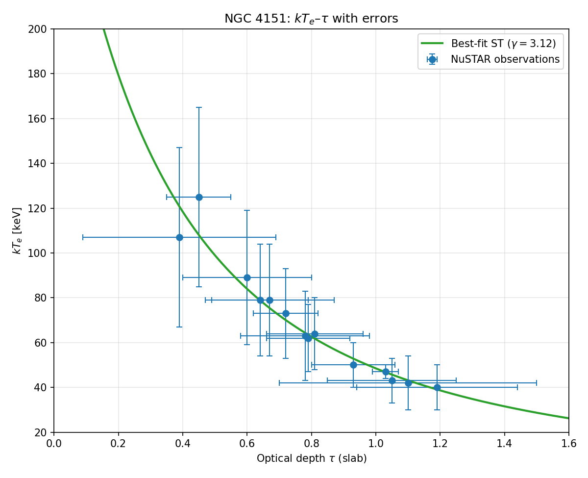
图注：各次 NuSTAR 观测得到的电子等离子体温度（keV）与光深。数据点来自本文使用的观测，绿色连续曲线为最佳拟合关系。
怎么看这张图：沿横轴看较大光深对应的较低温度。曲线给出该几何下的平衡趋势，误差与单次光谱拟合中的参数退化还应一起看。 直接呈现多历元冕温度与光深趋势
来源与置信度：arXiv HTML；source verified；https://arxiv.org/html/2611.14157v1/temptau.png
9. A large radiatively loud anti-glitch in 1E 2259+586 with a protracted recovery
- 来源：arXiv / astro-ph.HE
- 链接：https://arxiv.org/abs/2611.14217
- 作者：Han-Long Peng, Ming-Yu Ge, Shan-Shan Weng, Roberto Taverna, Shuang-Nan Zhang, Hua Feng, Yu-Jia Zheng, Kai-Ge Chang
- 公告 / 来源日期：2026-11-11
- 阅读层级：相关简报
- 评分：novelty 7/10，importance 8/10，relevance 8/10，final 8.70/10
- 推荐理由：EP、NICER、IXPE及GBM同源时间/辐射记录确认大反glitch与超过320日恢复；机理仍需更密时间采样。
中文题目：磁星 1E 2259+586 自转骤慢，同时出现一年尺度的 X 射线增亮
问题、方法与结论：作者用爱因斯坦探针（EP）、NICER 和 IXPE 的 X 射线数据，跟踪 1E 2259+586 在 MJD 60820 附近的反跃变。用脉冲到达时刻做分段与全相干计时，得到频率突降 $-1.174(7)\times10^{-7}$ Hz，相对变化约 $-8.19(4)\times10^{-7}$，是这颗源迄今最大的一次。NICER 测得持续 X 射线通量增约 106%，EP 测得约 60%，约 320 天后的 IXPE 观测仍有通量残留增量。两峰之间的脉冲谷变浅，之后随通量缓慢恢复。
意义与贡献：同一磁星曾有辐射变化很弱的反跃变。这次明亮事件给出时间上并行的自转变化、长期辐射演化及脉冲形变，为区分内部角动量交换和磁层活动的贡献增加了观测量。
可借鉴之处：可用反跃变前后的到达时刻建立相干计时解，再将同一时间轴上的谱、脉冲轮廓与辐射恢复串起来。多台仪器的变化幅度保留各自波段和响应口径，避免直接合并成一个百分比。
局限与关注点：事件附近采样和各仪器覆盖不同。双黑体与黑体加幂律对相位谱给出不同的温度或斜率描述。现有同时性支持磁层参与，角动量转移和辐射起源仍需要模型及更高频率监测区分。
图 1
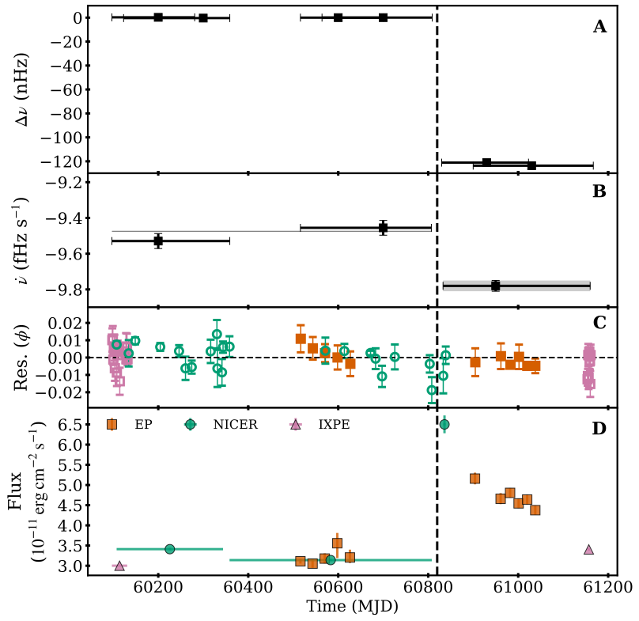
图注：1E 2259+586 的自转与通量演化，竖虚线标出反跃变历元。（A）去除长期线性趋势后的频率。（B）频率导数，灰带为两段星历拟合的 $\dot\nu$ 及不确定性。（C）脉冲到达时刻残差。（D）通量时间序列，橙红、紫红、蓝绿分别为 EP-FXT、IXPE、NICER。
怎么看这张图：沿竖虚线把（A）的频率跳变和（D）的通量增亮对齐，再看后续通量何时回归。各仪器在不同时间及能谱响应下测得的通量幅度需按正文口径比较。 合并计时与辐射演化的关键观测图
来源与置信度：arXiv HTML；source verified；https://arxiv.org/html/2611.14217v1/timing-flux.svg
10. Spectral Constraints on Line-Seed Inverse-Compton Models for the MeV Feature in GRB 221009A
- 来源：arXiv / astro-ph.HE
- 链接：https://arxiv.org/abs/2611.14363
- 作者：Nissim Fraija
- 公告 / 来源日期：2026-11-11
- 阅读层级：相关简报
- 评分：novelty 7/10，importance 7/10，relevance 9/10，final 8.70/10
- 推荐理由：用GBM MeV线宽、JWST分子线动机与LAT约束同时检验IC假说，模型电子分布与照明几何限制排他性。
中文题目：GRB 221009A 的 MeV 谱特征能否来自分子谱线的逆康普顿散射？
问题、方法与结论：作者尝试用伽马暴喷流中的相对论电子散射外部原子和分子谱线，解释 GRB 221009A 随时间变化的 MeV 特征。对侧向入射的 2.122 微米分子氢谱线，逐时段调整窄对数正态电子分布，可复现已发表的光子重心和宽度。再加入驱动分子荧光的紫外场并和 Fermi-LAT 的同期谱比较。考虑伴随分子跃迁后，表现最好的模板仍在部分能量处高于采用的中心参考谱。
意义与贡献：已见的 MeV 谱结构有多种机制解释。一个外部种子光模型除了要把主峰移到正确能量，还要让伴随谱线与紫外散射不会在旁带过亮。这个约束比单独对准峰值更能筛去不合适的几何与辐射场。
可借鉴之处：可用一条种子线校准电子能量范围，随后固定主线归一化，将伴线谱和额外光场的逆康普顿分量作为带外检验。多时段再检验同一电子种群是否能在时间上自洽。
局限与关注点：用于动机的分子氢数据来自晚期。暴发早期喷流旁的种子场强、覆盖与几何都依赖假设。比较基于公开中心谱曲线及其矩，未联合拟合探测器计数与连续谱，因此偏差尚无统计排斥显著性。
图 1
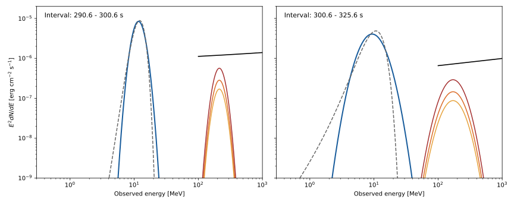
图注：以触发时刻为零点的指定观测时段中，GRB 221009A 的示意逆康普顿谱。蓝线为孤立 2.122 微米分子氢线的散射，灰虚线为校准使用的已发表 MeV 高斯分量。金、橙、红曲线分别取局部紫外与分子氢能量密度比 0.03、0.05、0.10。黑线为重建的 LAT 幂律参考谱。图中省去完整的 GBM 连续谱和其他分子跃迁。
怎么看这张图：先看蓝线和灰虚线形状，再用黑线检查紫外散射随能量密度比变化的额外通量。灰线用于校准，图示只比较分量，不是联合拟合的残差图。 展示主峰矩校准和额外紫外散射的 LAT 检验
来源与置信度：arXiv HTML；source verified；https://arxiv.org/html/2611.14363v1/GRB221009A_IC_components.svg
11. Ultra-high-energy cosmic rays require metal-rich sources
- 来源：arXiv / astro-ph.HE
- 链接：https://arxiv.org/abs/2611.14038
- 作者：E. Podlesnyi, F. Oikonomou, D. Ehlert, M. Unger
- 公告 / 来源日期：2026-11-11
- 阅读层级：相关简报
- 评分：novelty 8/10，importance 7/10，relevance 8/10，final 8.65/10
- 推荐理由：在固定刚度而非能量读取注入组成，并检查两支氢来源退化；推断依赖传播、组分与簇射模型。
中文题目：用相同刚度比较超高能宇宙线：源端仍需要硅至铁的重核富集
问题、方法与结论：文章联合拟合 Pierre Auger 天文台的能谱和空气簇射最大深度数据，经河外传播模型反演逃出源区的组分，并在相同磁刚度下与银河宇宙线种子比较。拟合允许两类解，一类在地球处的氢谱主要由重核光致解体的次级质子提供，另一类还保留较多初级质子。后一类的源端氢丰度可接近低能银河宇宙线，两类解都要求逃逸的硅至铁质量组分富集。
意义与贡献：磁场按刚度影响粒子加速与传播。对于谱指数不同的种群，在同一总能量比较氢和铁其实选了不同刚度段，容易扭曲对源端重元素增强的判断。这个换元直接影响银河类种子再加速是否足够。
可借鉴之处：源模型宜先生成按刚度表示的逃逸组分，经传播转换为地球处的能谱及簇射观测量，再将同一刚度的源端丰度与候选种子进行比较。初级和次级质子可在传播计算中分别记账。
局限与关注点：拟合依赖所采用的源演化、传播和空气簇射相互作用模型。图中保守系统偏移仅覆盖论文测试的范围，重核富集仍可能由源内部加工、逃逸选择和种子组成的不同组合造成，无法独立确定源类型。
图 2
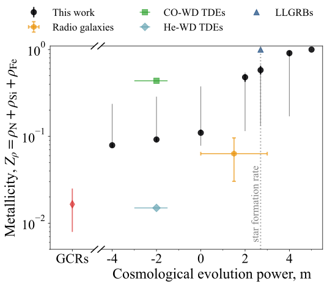
图注：超高能宇宙线在固定刚度下的金属丰度随源宇宙学演化指数变化，并与多种源模型比较。红菱形标记银河宇宙线；黑误差棒为 Auger 标称数据的 68% 最高密度可信区间，灰误差棒为在平均簇射深度系统偏移下可信区间的变化范围。
怎么看这张图：横轴改变源演化历史，沿黑、灰误差棒比较源端富集约束及系统变化。红菱形给银河宇宙线的参考，读图须用固定刚度口径。 检验富金属结论对宇宙学源演化和簇射深度的依赖
来源与置信度：arXiv HTML；source verified；https://arxiv.org/html/2611.14038v1/metallicity_as_function_of_m.svg
12. Perturbative QCD Constraints on Hot Neutron-Star Matter
- 来源：arXiv / astro-ph.HE
- 链接：https://arxiv.org/abs/2611.14331
- 作者：Tyler Gorda, Aleksi Kurkela, Tuhin Malik
- 公告 / 来源日期：2026-11-11
- 阅读层级：相关简报
- 评分：novelty 8/10，importance 8/10，relevance 7/10，final 8.65/10
- 推荐理由：把高密微扰QCD外推界推广到有限熵，量化状态方程剔除区；密度界和温度依赖以理论输入为条件。
中文题目：把微扰 QCD 的约束延伸到热致密物质：按等熵线检查中子星状态方程
问题、方法与结论：作者把高密度微扰量子色动力学（pQCD）的热力学、因果性与稳定性约束从冷物质推广到有限温度。沿每重子熵固定的轨迹，用比焓替代零温时的重子化学势，将低密度核物质锚点与高密度 pQCD 锚点连接。算例中熵升高会收窄允许带。DD2 在每重子熵从 0 增到 5 时，首次偏离允许带的密度由约 1.0 降至 0.74 每立方飞米。每重子熵为 4 时，在六倍核饱和密度处有 11 个相对论平均场模型中的 7 个落在带外。
意义与贡献：并合模拟常依赖难以由直接观测约束的热状态方程。等熵检查利用高密度的理论边界在模拟关心的中间密度筛表，可量化哪些热延伸已经无法与稳定且因果的高密度行为相接。
可借鉴之处：在同一成分和热力学条件下，从状态方程表提取若干等熵轨迹，记录每条轨迹首次越过允许带的密度，再与并合物质实际经过的温度和密度范围对照。
局限与关注点：当前构造采用中微子透明、电中性、β 平衡物质及选定的低密度锚点。原中子星和并合残骸可能有中微子俘获及不同轻子分数。约束出现的温度范围可以指导检查，固定轻子分数还需专门推广。
图 4
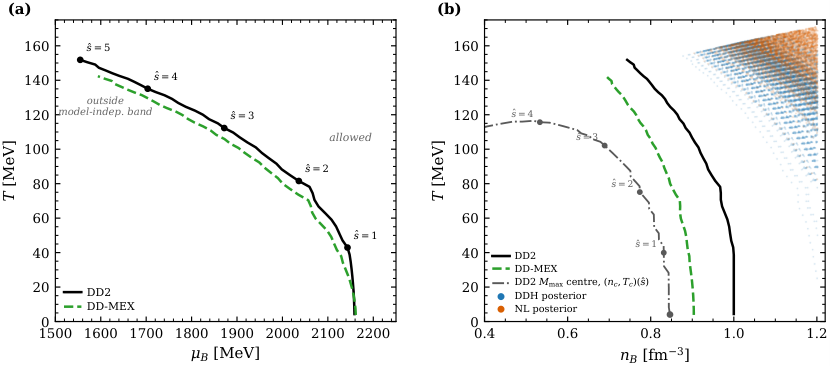
图注：量子色动力学相图中的退出边界。（a）重子化学势与温度平面，实线、虚线分别为 DD2 与 DD-MEX，标注各等熵轨迹的每重子熵。（b）重子数密度与温度平面，加上非线性和密度依赖模型后验的退出点云。点划线为 DD2 对各等熵轨迹算得的最大质量星中心状态，由冷星延伸至每重子熵 4.6。
怎么看这张图：把状态方程的退出轨迹与最大质量星的中心轨迹对照。边界随温度变化，某条热轨迹能否使用取决于它的密度、熵和物质成分。 展示等熵约束接近并合与原中子星参数区间
来源与置信度：arXiv HTML；source verified；https://arxiv.org/html/2611.14331v1/fig5_phase_diagram.png
说明
评分由 LLM 给出初评，再由本地阈值策略过滤；IACT、TeV 伽马射线和高能中微子天文学按重点方向处理。